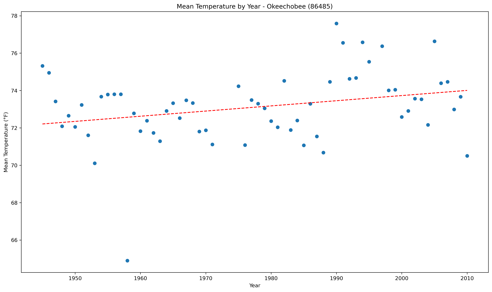

<!DOCTYPE html>
<html>
<head>
    
    <meta http-equiv="content-type" content="text/html; charset=UTF-8" />
    
        <script>
            L_NO_TOUCH = false;
            L_DISABLE_3D = false;
        </script>
    
    <style>html, body {width: 100%;height: 100%;margin: 0;padding: 0;}</style>
    <style>#map {position:absolute;top:0;bottom:0;right:0;left:0;}</style>
    <script src="https://cdn.jsdelivr.net/npm/leaflet@1.9.3/dist/leaflet.js"></script>
    <script src="https://code.jquery.com/jquery-1.12.4.min.js"></script>
    <script src="https://cdn.jsdelivr.net/npm/bootstrap@5.2.2/dist/js/bootstrap.bundle.min.js"></script>
    <script src="https://cdnjs.cloudflare.com/ajax/libs/Leaflet.awesome-markers/2.0.2/leaflet.awesome-markers.js"></script>
    <link rel="stylesheet" href="https://cdn.jsdelivr.net/npm/leaflet@1.9.3/dist/leaflet.css"/>
    <link rel="stylesheet" href="https://cdn.jsdelivr.net/npm/bootstrap@5.2.2/dist/css/bootstrap.min.css"/>
    <link rel="stylesheet" href="https://netdna.bootstrapcdn.com/bootstrap/3.0.0/css/bootstrap.min.css"/>
    <link rel="stylesheet" href="https://cdn.jsdelivr.net/npm/@fortawesome/fontawesome-free@6.2.0/css/all.min.css"/>
    <link rel="stylesheet" href="https://cdnjs.cloudflare.com/ajax/libs/Leaflet.awesome-markers/2.0.2/leaflet.awesome-markers.css"/>
    <link rel="stylesheet" href="https://cdn.jsdelivr.net/gh/python-visualization/folium/folium/templates/leaflet.awesome.rotate.min.css"/>
    
            <meta name="viewport" content="width=device-width,
                initial-scale=1.0, maximum-scale=1.0, user-scalable=no" />
            <style>
                #map_1f29bd5a6bebbb199584e43af7bcfd78 {
                    position: relative;
                    width: 100.0%;
                    height: 100.0%;
                    left: 0.0%;
                    top: 0.0%;
                }
                .leaflet-container { font-size: 1rem; }
            </style>
        
</head>
<body>
    
    
            <div class="folium-map" id="map_1f29bd5a6bebbb199584e43af7bcfd78" ></div>
        
</body>
<script>
    
    
            var map_1f29bd5a6bebbb199584e43af7bcfd78 = L.map(
                "map_1f29bd5a6bebbb199584e43af7bcfd78",
                {
                    center: [28.0, -82.5],
                    crs: L.CRS.EPSG3857,
                    zoom: 7,
                    zoomControl: false,
                    preferCanvas: false,
                    minLot: -90.0,
                    maxLot: -75.0,
                }
            );

            

        
    
            var tile_layer_eb69dc91d7a571523833c759787c4ce4 = L.tileLayer(
                "https://{s}.tile.openstreetmap.org/{z}/{x}/{y}.png",
                {"attribution": "Data by \u0026copy; \u003ca target=\"_blank\" href=\"http://openstreetmap.org\"\u003eOpenStreetMap\u003c/a\u003e, under \u003ca target=\"_blank\" href=\"http://www.openstreetmap.org/copyright\"\u003eODbL\u003c/a\u003e.", "detectRetina": false, "maxNativeZoom": 18, "maxZoom": 18, "minZoom": 7, "noWrap": false, "opacity": 1, "subdomains": "abc", "tms": false}
            ).addTo(map_1f29bd5a6bebbb199584e43af7bcfd78);
        
    
            var marker_9bddd4e6ad6af56cb9893ff0cb596e7b = L.marker(
                [29.43, -85.1],
                {}
            ).addTo(map_1f29bd5a6bebbb199584e43af7bcfd78);
        
    
            var icon_3dd692169b79202a399c0ae3ff8d81ce = L.AwesomeMarkers.icon(
                {"extraClasses": "fa-rotate-0", "icon": "info-sign", "iconColor": "white", "markerColor": "blue", "prefix": "glyphicon"}
            );
            marker_9bddd4e6ad6af56cb9893ff0cb596e7b.setIcon(icon_3dd692169b79202a399c0ae3ff8d81ce);
        
    
        var popup_b1e78d7260d12d78c11545d84dcf8e93 = L.popup({"maxWidth": 1000, "minWidth": 500});

        
            
                var html_9e4df67ffa9508c36ee8cf28a70899fb = $(`<div id="html_9e4df67ffa9508c36ee8cf28a70899fb" style="width: 100.0%; height: 100.0%;"><b>Apalachicola AP (80211)</b><br>lat: 29.43, lon: -85.1<br><a href='static/img/yearly_trend/80211_mean_trend_yearly.png'></a></div>`)[0];
                popup_b1e78d7260d12d78c11545d84dcf8e93.setContent(html_9e4df67ffa9508c36ee8cf28a70899fb);
            
        

        marker_9bddd4e6ad6af56cb9893ff0cb596e7b.bindPopup(popup_b1e78d7260d12d78c11545d84dcf8e93)
        ;

        
    
    
            var marker_ed1bc3b09005baad56e84120437ce24f = L.marker(
                [27.13, -81.52],
                {}
            ).addTo(map_1f29bd5a6bebbb199584e43af7bcfd78);
        
    
            var icon_69d873e4ee6fa5f3c8efc24cc97b8273 = L.AwesomeMarkers.icon(
                {"extraClasses": "fa-rotate-0", "icon": "info-sign", "iconColor": "white", "markerColor": "orange", "prefix": "glyphicon"}
            );
            marker_ed1bc3b09005baad56e84120437ce24f.setIcon(icon_69d873e4ee6fa5f3c8efc24cc97b8273);
        
    
        var popup_6644de058ab56324e50e505949d2ea6e = L.popup({"maxWidth": 1000, "minWidth": 500});

        
            
                var html_615c672da4c5cdbea0e93a17ea7bb562 = $(`<div id="html_615c672da4c5cdbea0e93a17ea7bb562" style="width: 100.0%; height: 100.0%;"><b>Arcadia (80228)</b><br>lat: 27.13, lon: -81.52<br><a href='static/img/yearly_trend/80228_mean_trend_yearly.png'></a></div>`)[0];
                popup_6644de058ab56324e50e505949d2ea6e.setContent(html_615c672da4c5cdbea0e93a17ea7bb562);
            
        

        marker_ed1bc3b09005baad56e84120437ce24f.bindPopup(popup_6644de058ab56324e50e505949d2ea6e)
        ;

        
    
    
            var marker_234c02b7e4e4c5fda9730a64c2024387 = L.marker(
                [27.1, -81.21],
                {}
            ).addTo(map_1f29bd5a6bebbb199584e43af7bcfd78);
        
    
            var icon_bd819a68ab1bb8c53a79fe27e969676c = L.AwesomeMarkers.icon(
                {"extraClasses": "fa-rotate-0", "icon": "info-sign", "iconColor": "white", "markerColor": "orange", "prefix": "glyphicon"}
            );
            marker_234c02b7e4e4c5fda9730a64c2024387.setIcon(icon_bd819a68ab1bb8c53a79fe27e969676c);
        
    
        var popup_d3760d2a21deb3586cee4a5eb571433e = L.popup({"maxWidth": 1000, "minWidth": 500});

        
            
                var html_be6c3cb9cf58b78caa0e0af40a092f93 = $(`<div id="html_be6c3cb9cf58b78caa0e0af40a092f93" style="width: 100.0%; height: 100.0%;"><b>Archbold Bio Stn (80236)</b><br>lat: 27.1, lon: -81.21<br><a href='static/img/yearly_trend/80236_mean_trend_yearly.png'></a></div>`)[0];
                popup_d3760d2a21deb3586cee4a5eb571433e.setContent(html_be6c3cb9cf58b78caa0e0af40a092f93);
            
        

        marker_234c02b7e4e4c5fda9730a64c2024387.bindPopup(popup_d3760d2a21deb3586cee4a5eb571433e)
        ;

        
    
    
            var marker_4c4acd604ea7d146ec729fd2c39278da = L.marker(
                [27.35, -81.31],
                {}
            ).addTo(map_1f29bd5a6bebbb199584e43af7bcfd78);
        
    
            var icon_51d281532564d774d7e07e31e2d02ff5 = L.AwesomeMarkers.icon(
                {"extraClasses": "fa-rotate-0", "icon": "info-sign", "iconColor": "white", "markerColor": "orange", "prefix": "glyphicon"}
            );
            marker_4c4acd604ea7d146ec729fd2c39278da.setIcon(icon_51d281532564d774d7e07e31e2d02ff5);
        
    
        var popup_8eeabb3799e1eb28207d1a1b42f1cd94 = L.popup({"maxWidth": 1000, "minWidth": 500});

        
            
                var html_ca26d2e66f3df778ca03d4691a75089c = $(`<div id="html_ca26d2e66f3df778ca03d4691a75089c" style="width: 100.0%; height: 100.0%;"><b>Avon Park 2 W (80369)</b><br>lat: 27.35, lon: -81.31<br><a href='static/img/yearly_trend/80369_mean_trend_yearly.png'></a></div>`)[0];
                popup_8eeabb3799e1eb28207d1a1b42f1cd94.setContent(html_ca26d2e66f3df778ca03d4691a75089c);
            
        

        marker_4c4acd604ea7d146ec729fd2c39278da.bindPopup(popup_8eeabb3799e1eb28207d1a1b42f1cd94)
        ;

        
    
    
            var marker_0eeeea054ac1e4da45338c88ea09ec5e = L.marker(
                [27.53, -81.5],
                {}
            ).addTo(map_1f29bd5a6bebbb199584e43af7bcfd78);
        
    
            var icon_d1ef6971d2e333c20e17e6e5fac17c76 = L.AwesomeMarkers.icon(
                {"extraClasses": "fa-rotate-0", "icon": "info-sign", "iconColor": "white", "markerColor": "orange", "prefix": "glyphicon"}
            );
            marker_0eeeea054ac1e4da45338c88ea09ec5e.setIcon(icon_d1ef6971d2e333c20e17e6e5fac17c76);
        
    
        var popup_8db8222594185c70dff56b4778b3f1db = L.popup({"maxWidth": 1000, "minWidth": 500});

        
            
                var html_508ed4832e493ef5649cffbf9f1bcbac = $(`<div id="html_508ed4832e493ef5649cffbf9f1bcbac" style="width: 100.0%; height: 100.0%;"><b>Bartow (80478)</b><br>lat: 27.53, lon: -81.5<br><a href='static/img/yearly_trend/80478_mean_trend_yearly.png'></a></div>`)[0];
                popup_8db8222594185c70dff56b4778b3f1db.setContent(html_508ed4832e493ef5649cffbf9f1bcbac);
            
        

        marker_0eeeea054ac1e4da45338c88ea09ec5e.bindPopup(popup_8db8222594185c70dff56b4778b3f1db)
        ;

        
    
    
            var marker_e73e61411cd8b33bff511b1fa33bf2fd = L.marker(
                [26.41, -80.4],
                {}
            ).addTo(map_1f29bd5a6bebbb199584e43af7bcfd78);
        
    
            var icon_24f076a7f0181f914113b8d75d0df9d9 = L.AwesomeMarkers.icon(
                {"extraClasses": "fa-rotate-0", "icon": "info-sign", "iconColor": "white", "markerColor": "red", "prefix": "glyphicon"}
            );
            marker_e73e61411cd8b33bff511b1fa33bf2fd.setIcon(icon_24f076a7f0181f914113b8d75d0df9d9);
        
    
        var popup_01badb9e5ae649fb4d90b5e1ab0093bb = L.popup({"maxWidth": 1000, "minWidth": 500});

        
            
                var html_6e377541284c9fe2a7dbec566d31e3bd = $(`<div id="html_6e377541284c9fe2a7dbec566d31e3bd" style="width: 100.0%; height: 100.0%;"><b>Belle Glade (80611)</b><br>lat: 26.41, lon: -80.4<br><a href='static/img/yearly_trend/80611_mean_trend_yearly.png'></a></div>`)[0];
                popup_01badb9e5ae649fb4d90b5e1ab0093bb.setContent(html_6e377541284c9fe2a7dbec566d31e3bd);
            
        

        marker_e73e61411cd8b33bff511b1fa33bf2fd.bindPopup(popup_01badb9e5ae649fb4d90b5e1ab0093bb)
        ;

        
    
    
            var marker_1d7b3aefebe13415a576844de601919f = L.marker(
                [27.26, -82.3],
                {}
            ).addTo(map_1f29bd5a6bebbb199584e43af7bcfd78);
        
    
            var icon_41360324c72bbe3db0368ee819c90c68 = L.AwesomeMarkers.icon(
                {"extraClasses": "fa-rotate-0", "icon": "info-sign", "iconColor": "white", "markerColor": "orange", "prefix": "glyphicon"}
            );
            marker_1d7b3aefebe13415a576844de601919f.setIcon(icon_41360324c72bbe3db0368ee819c90c68);
        
    
        var popup_d8cea78bab9e72b94be2f2ba745c9e25 = L.popup({"maxWidth": 1000, "minWidth": 500});

        
            
                var html_9da6ef261d660ebd58110d1a592d3d84 = $(`<div id="html_9da6ef261d660ebd58110d1a592d3d84" style="width: 100.0%; height: 100.0%;"><b>Bradenton 5 ESE (80945)</b><br>lat: 27.26, lon: -82.3<br><a href='static/img/yearly_trend/80945_mean_trend_yearly.png'></a></div>`)[0];
                popup_d8cea78bab9e72b94be2f2ba745c9e25.setContent(html_9da6ef261d660ebd58110d1a592d3d84);
            
        

        marker_1d7b3aefebe13415a576844de601919f.bindPopup(popup_d8cea78bab9e72b94be2f2ba745c9e25)
        ;

        
    
    
            var marker_6fc759f6e541fcc771e9d413c0856f5e = L.marker(
                [28.36, -82.21],
                {}
            ).addTo(map_1f29bd5a6bebbb199584e43af7bcfd78);
        
    
            var icon_947bc2d204773a636072299b489dfcb0 = L.AwesomeMarkers.icon(
                {"extraClasses": "fa-rotate-0", "icon": "info-sign", "iconColor": "white", "markerColor": "orange", "prefix": "glyphicon"}
            );
            marker_6fc759f6e541fcc771e9d413c0856f5e.setIcon(icon_947bc2d204773a636072299b489dfcb0);
        
    
        var popup_7282c6db4e0e5af3d8be8e182d3e5b3c = L.popup({"maxWidth": 1000, "minWidth": 500});

        
            
                var html_f31d5f5a5c9bad9ad05bf6eec7c6b5da = $(`<div id="html_f31d5f5a5c9bad9ad05bf6eec7c6b5da" style="width: 100.0%; height: 100.0%;"><b>Brooksville Chin Hill (81046)</b><br>lat: 28.36, lon: -82.21<br><a href='static/img/yearly_trend/81046_mean_trend_yearly.png'></a></div>`)[0];
                popup_7282c6db4e0e5af3d8be8e182d3e5b3c.setContent(html_f31d5f5a5c9bad9ad05bf6eec7c6b5da);
            
        

        marker_6fc759f6e541fcc771e9d413c0856f5e.bindPopup(popup_7282c6db4e0e5af3d8be8e182d3e5b3c)
        ;

        
    
    
            var marker_50147f58843baacd27e78d4e693b422e = L.marker(
                [28.39, -82.4],
                {}
            ).addTo(map_1f29bd5a6bebbb199584e43af7bcfd78);
        
    
            var icon_ee7de092b2bbde75fbcff557d331f77f = L.AwesomeMarkers.icon(
                {"extraClasses": "fa-rotate-0", "icon": "info-sign", "iconColor": "white", "markerColor": "orange", "prefix": "glyphicon"}
            );
            marker_50147f58843baacd27e78d4e693b422e.setIcon(icon_ee7de092b2bbde75fbcff557d331f77f);
        
    
        var popup_93ea77735ab9f9f45b8595d9968988cf = L.popup({"maxWidth": 1000, "minWidth": 500});

        
            
                var html_c939ec1ee93ad1b20291d264af8d3e73 = $(`<div id="html_c939ec1ee93ad1b20291d264af8d3e73" style="width: 100.0%; height: 100.0%;"><b>Bushnell 1 E (81163)</b><br>lat: 28.39, lon: -82.4<br><a href='static/img/yearly_trend/81163_mean_trend_yearly.png'></a></div>`)[0];
                popup_93ea77735ab9f9f45b8595d9968988cf.setContent(html_c939ec1ee93ad1b20291d264af8d3e73);
            
        

        marker_50147f58843baacd27e78d4e693b422e.bindPopup(popup_93ea77735ab9f9f45b8595d9968988cf)
        ;

        
    
    
            var marker_49fe657502fa9ed77179a02c09fa3fb4 = L.marker(
                [26.51, -80.37],
                {}
            ).addTo(map_1f29bd5a6bebbb199584e43af7bcfd78);
        
    
            var icon_101e8fcde272401a700740274483351f = L.AwesomeMarkers.icon(
                {"extraClasses": "fa-rotate-0", "icon": "info-sign", "iconColor": "white", "markerColor": "red", "prefix": "glyphicon"}
            );
            marker_49fe657502fa9ed77179a02c09fa3fb4.setIcon(icon_101e8fcde272401a700740274483351f);
        
    
        var popup_7deeb865f755e8cdfaa1da19db000ce3 = L.popup({"maxWidth": 1000, "minWidth": 500});

        
            
                var html_fb5ccdd8b1a1c0cc137cb2f471dec6f3 = $(`<div id="html_fb5ccdd8b1a1c0cc137cb2f471dec6f3" style="width: 100.0%; height: 100.0%;"><b>Canal Point USDA (81276)</b><br>lat: 26.51, lon: -80.37<br><a href='static/img/yearly_trend/81276_mean_trend_yearly.png'></a></div>`)[0];
                popup_7deeb865f755e8cdfaa1da19db000ce3.setContent(html_fb5ccdd8b1a1c0cc137cb2f471dec6f3);
            
        

        marker_49fe657502fa9ed77179a02c09fa3fb4.bindPopup(popup_7deeb865f755e8cdfaa1da19db000ce3)
        ;

        
    
    
            var marker_a368e24bc191a8fccc880ef81b3427f9 = L.marker(
                [30.47, -85.29],
                {}
            ).addTo(map_1f29bd5a6bebbb199584e43af7bcfd78);
        
    
            var icon_6a7897778959432e6223d720ae9f71f0 = L.AwesomeMarkers.icon(
                {"extraClasses": "fa-rotate-0", "icon": "info-sign", "iconColor": "white", "markerColor": "blue", "prefix": "glyphicon"}
            );
            marker_a368e24bc191a8fccc880ef81b3427f9.setIcon(icon_6a7897778959432e6223d720ae9f71f0);
        
    
        var popup_2c0772f7079114aba5ccfc9586a23e36 = L.popup({"maxWidth": 1000, "minWidth": 500});

        
            
                var html_791a9e2b5db5ecab58b85c42ef08e5e7 = $(`<div id="html_791a9e2b5db5ecab58b85c42ef08e5e7" style="width: 100.0%; height: 100.0%;"><b>Chipley (81544)</b><br>lat: 30.47, lon: -85.29<br><a href='static/img/yearly_trend/81544_mean_trend_yearly.png'></a></div>`)[0];
                popup_2c0772f7079114aba5ccfc9586a23e36.setContent(html_791a9e2b5db5ecab58b85c42ef08e5e7);
            
        

        marker_a368e24bc191a8fccc880ef81b3427f9.bindPopup(popup_2c0772f7079114aba5ccfc9586a23e36)
        ;

        
    
    
            var marker_28b627e73294ccdfb611313094b7a446 = L.marker(
                [28.27, -81.43],
                {}
            ).addTo(map_1f29bd5a6bebbb199584e43af7bcfd78);
        
    
            var icon_36b13b6eb5221e29fca5c4ae6d22a13d = L.AwesomeMarkers.icon(
                {"extraClasses": "fa-rotate-0", "icon": "info-sign", "iconColor": "white", "markerColor": "orange", "prefix": "glyphicon"}
            );
            marker_28b627e73294ccdfb611313094b7a446.setIcon(icon_36b13b6eb5221e29fca5c4ae6d22a13d);
        
    
        var popup_745597b261dbd6dcd2564be6a37f7d3a = L.popup({"maxWidth": 1000, "minWidth": 500});

        
            
                var html_a635efca2a9afd7a476660dd82c6e0af = $(`<div id="html_a635efca2a9afd7a476660dd82c6e0af" style="width: 100.0%; height: 100.0%;"><b>Clermont 9 S (81641)</b><br>lat: 28.27, lon: -81.43<br><a href='static/img/yearly_trend/81641_mean_trend_yearly.png'></a></div>`)[0];
                popup_745597b261dbd6dcd2564be6a37f7d3a.setContent(html_a635efca2a9afd7a476660dd82c6e0af);
            
        

        marker_28b627e73294ccdfb611313094b7a446.bindPopup(popup_745597b261dbd6dcd2564be6a37f7d3a)
        ;

        
    
    
            var marker_6669aaad38c324761d0019a88ba7950e = L.marker(
                [29.25, -81.31],
                {}
            ).addTo(map_1f29bd5a6bebbb199584e43af7bcfd78);
        
    
            var icon_4378b8cd1b5423bbaaed1b8d9ce646dc = L.AwesomeMarkers.icon(
                {"extraClasses": "fa-rotate-0", "icon": "info-sign", "iconColor": "white", "markerColor": "blue", "prefix": "glyphicon"}
            );
            marker_6669aaad38c324761d0019a88ba7950e.setIcon(icon_4378b8cd1b5423bbaaed1b8d9ce646dc);
        
    
        var popup_29b7d4bc16c5e83b2802daa9fa2e624f = L.popup({"maxWidth": 1000, "minWidth": 500});

        
            
                var html_6de6117c886599af6e87fd467a5099a6 = $(`<div id="html_6de6117c886599af6e87fd467a5099a6" style="width: 100.0%; height: 100.0%;"><b>Crescent City (81978)</b><br>lat: 29.25, lon: -81.31<br><a href='static/img/yearly_trend/81978_mean_trend_yearly.png'></a></div>`)[0];
                popup_29b7d4bc16c5e83b2802daa9fa2e624f.setContent(html_6de6117c886599af6e87fd467a5099a6);
            
        

        marker_6669aaad38c324761d0019a88ba7950e.bindPopup(popup_29b7d4bc16c5e83b2802daa9fa2e624f)
        ;

        
    
    
            var marker_40508189822834839ab2bf1134fe1272 = L.marker(
                [30.78, -86.52],
                {}
            ).addTo(map_1f29bd5a6bebbb199584e43af7bcfd78);
        
    
            var icon_a2b1125036051391fc546792f751e767 = L.AwesomeMarkers.icon(
                {"extraClasses": "fa-rotate-0", "icon": "info-sign", "iconColor": "white", "markerColor": "blue", "prefix": "glyphicon"}
            );
            marker_40508189822834839ab2bf1134fe1272.setIcon(icon_a2b1125036051391fc546792f751e767);
        
    
        var popup_c6fbb34dc7f58db20aa8ff91d9effb5e = L.popup({"maxWidth": 1000, "minWidth": 500});

        
            
                var html_c35ad53a8508e652a93c9ab541ee0633 = $(`<div id="html_c35ad53a8508e652a93c9ab541ee0633" style="width: 100.0%; height: 100.0%;"><b>Crestview Bob Sikes Airport (81986)</b><br>lat: 30.78, lon: -86.52<br><a href='static/img/yearly_trend/81986_mean_trend_yearly.png'></a></div>`)[0];
                popup_c6fbb34dc7f58db20aa8ff91d9effb5e.setContent(html_c35ad53a8508e652a93c9ab541ee0633);
            
        

        marker_40508189822834839ab2bf1134fe1272.bindPopup(popup_c6fbb34dc7f58db20aa8ff91d9effb5e)
        ;

        
    
    
            var marker_0240e50208f7e3342776cf12e8a76099 = L.marker(
                [29.38, -83.9],
                {}
            ).addTo(map_1f29bd5a6bebbb199584e43af7bcfd78);
        
    
            var icon_3cca35dc9402743cc628d7af713e75d9 = L.AwesomeMarkers.icon(
                {"extraClasses": "fa-rotate-0", "icon": "info-sign", "iconColor": "white", "markerColor": "blue", "prefix": "glyphicon"}
            );
            marker_0240e50208f7e3342776cf12e8a76099.setIcon(icon_3cca35dc9402743cc628d7af713e75d9);
        
    
        var popup_c5d7829d8f1f3a2b8041f3dafb1cadc5 = L.popup({"maxWidth": 1000, "minWidth": 500});

        
            
                var html_176e7f88d64eb2dc4abe61587eb098c5 = $(`<div id="html_176e7f88d64eb2dc4abe61587eb098c5" style="width: 100.0%; height: 100.0%;"><b>Cross City 1 E (82008)</b><br>lat: 29.38, lon: -83.9<br><a href='static/img/yearly_trend/82008_mean_trend_yearly.png'></a></div>`)[0];
                popup_c5d7829d8f1f3a2b8041f3dafb1cadc5.setContent(html_176e7f88d64eb2dc4abe61587eb098c5);
            
        

        marker_0240e50208f7e3342776cf12e8a76099.bindPopup(popup_c5d7829d8f1f3a2b8041f3dafb1cadc5)
        ;

        
    
    
            var marker_4bcd09043cd72d868c123960581b5fb3 = L.marker(
                [29.11, -81.04],
                {}
            ).addTo(map_1f29bd5a6bebbb199584e43af7bcfd78);
        
    
            var icon_c5f07470ea4c99e730dc968373031927 = L.AwesomeMarkers.icon(
                {"extraClasses": "fa-rotate-0", "icon": "info-sign", "iconColor": "white", "markerColor": "blue", "prefix": "glyphicon"}
            );
            marker_4bcd09043cd72d868c123960581b5fb3.setIcon(icon_c5f07470ea4c99e730dc968373031927);
        
    
        var popup_f8b3c2648f6440ad44a1da3a12a602f6 = L.popup({"maxWidth": 1000, "minWidth": 500});

        
            
                var html_f899367ebd8ad20ad390ebcf65536f14 = $(`<div id="html_f899367ebd8ad20ad390ebcf65536f14" style="width: 100.0%; height: 100.0%;"><b>Daytona Beach (82150)</b><br>lat: 29.11, lon: -81.04<br><a href='static/img/yearly_trend/82150_mean_trend_yearly.png'></a></div>`)[0];
                popup_f8b3c2648f6440ad44a1da3a12a602f6.setContent(html_f899367ebd8ad20ad390ebcf65536f14);
            
        

        marker_4bcd09043cd72d868c123960581b5fb3.bindPopup(popup_f8b3c2648f6440ad44a1da3a12a602f6)
        ;

        
    
    
            var marker_15f63678f34e8329c764e2831bb06b76 = L.marker(
                [29.1, -81.2],
                {}
            ).addTo(map_1f29bd5a6bebbb199584e43af7bcfd78);
        
    
            var icon_ec2337f4e47e1d707a88624af4780a65 = L.AwesomeMarkers.icon(
                {"extraClasses": "fa-rotate-0", "icon": "info-sign", "iconColor": "white", "markerColor": "blue", "prefix": "glyphicon"}
            );
            marker_15f63678f34e8329c764e2831bb06b76.setIcon(icon_ec2337f4e47e1d707a88624af4780a65);
        
    
        var popup_abc8b16f1c2c5bfe5d59da94cd03ec99 = L.popup({"maxWidth": 1000, "minWidth": 500});

        
            
                var html_d0e215130e2e8917f78e4b7e940ff2fe = $(`<div id="html_d0e215130e2e8917f78e4b7e940ff2fe" style="width: 100.0%; height: 100.0%;"><b>Daytona Beach Intl Airport (82158)</b><br>lat: 29.1, lon: -81.2<br><a href='static/img/yearly_trend/82158_mean_trend_yearly.png'></a></div>`)[0];
                popup_abc8b16f1c2c5bfe5d59da94cd03ec99.setContent(html_d0e215130e2e8917f78e4b7e940ff2fe);
            
        

        marker_15f63678f34e8329c764e2831bb06b76.bindPopup(popup_abc8b16f1c2c5bfe5d59da94cd03ec99)
        ;

        
    
    
            var marker_8a7dc124f42bfd7f77def039c1c322d1 = L.marker(
                [30.43, -86.5],
                {}
            ).addTo(map_1f29bd5a6bebbb199584e43af7bcfd78);
        
    
            var icon_3e4b90c92c275f023afb578f95808596 = L.AwesomeMarkers.icon(
                {"extraClasses": "fa-rotate-0", "icon": "info-sign", "iconColor": "white", "markerColor": "blue", "prefix": "glyphicon"}
            );
            marker_8a7dc124f42bfd7f77def039c1c322d1.setIcon(icon_3e4b90c92c275f023afb578f95808596);
        
    
        var popup_db464a5629f780b744f5769e994bcc93 = L.popup({"maxWidth": 1000, "minWidth": 500});

        
            
                var html_296cbd288142d09fb3c9b23d4acafad5 = $(`<div id="html_296cbd288142d09fb3c9b23d4acafad5" style="width: 100.0%; height: 100.0%;"><b>De Funiak Springs 1 E (82220)</b><br>lat: 30.43, lon: -86.5<br><a href='static/img/yearly_trend/82220_mean_trend_yearly.png'></a></div>`)[0];
                popup_db464a5629f780b744f5769e994bcc93.setContent(html_296cbd288142d09fb3c9b23d4acafad5);
            
        

        marker_8a7dc124f42bfd7f77def039c1c322d1.bindPopup(popup_db464a5629f780b744f5769e994bcc93)
        ;

        
    
    
            var marker_f4090ca25eb34c4a9d00e0a7d4010274 = L.marker(
                [29.1, -81.81],
                {}
            ).addTo(map_1f29bd5a6bebbb199584e43af7bcfd78);
        
    
            var icon_754688c3f0fde43fb29cc4d436a8838e = L.AwesomeMarkers.icon(
                {"extraClasses": "fa-rotate-0", "icon": "info-sign", "iconColor": "white", "markerColor": "blue", "prefix": "glyphicon"}
            );
            marker_f4090ca25eb34c4a9d00e0a7d4010274.setIcon(icon_754688c3f0fde43fb29cc4d436a8838e);
        
    
        var popup_069ce0e1ad4cdca02ea04bc529504157 = L.popup({"maxWidth": 1000, "minWidth": 500});

        
            
                var html_1ada2a6803f3933ffa74a3db42e1c904 = $(`<div id="html_1ada2a6803f3933ffa74a3db42e1c904" style="width: 100.0%; height: 100.0%;"><b>Deland 1 SSE (82229)</b><br>lat: 29.1, lon: -81.81<br><a href='static/img/yearly_trend/82229_mean_trend_yearly.png'></a></div>`)[0];
                popup_069ce0e1ad4cdca02ea04bc529504157.setContent(html_1ada2a6803f3933ffa74a3db42e1c904);
            
        

        marker_f4090ca25eb34c4a9d00e0a7d4010274.bindPopup(popup_069ce0e1ad4cdca02ea04bc529504157)
        ;

        
    
    
            var marker_b00b9ab449b33d22500df15ce766e52e = L.marker(
                [26.44, -81.02],
                {}
            ).addTo(map_1f29bd5a6bebbb199584e43af7bcfd78);
        
    
            var icon_f62cc1e087918b407080d2bbe6b0402c = L.AwesomeMarkers.icon(
                {"extraClasses": "fa-rotate-0", "icon": "info-sign", "iconColor": "white", "markerColor": "red", "prefix": "glyphicon"}
            );
            marker_b00b9ab449b33d22500df15ce766e52e.setIcon(icon_f62cc1e087918b407080d2bbe6b0402c);
        
    
        var popup_b2212460914b9c75775a90b503ca82d9 = L.popup({"maxWidth": 1000, "minWidth": 500});

        
            
                var html_b97d19bcdc56a14262a5ea589f57eedc = $(`<div id="html_b97d19bcdc56a14262a5ea589f57eedc" style="width: 100.0%; height: 100.0%;"><b>Devils Garden (82298)</b><br>lat: 26.44, lon: -81.02<br><a href='static/img/yearly_trend/82298_mean_trend_yearly.png'></a></div>`)[0];
                popup_b2212460914b9c75775a90b503ca82d9.setContent(html_b97d19bcdc56a14262a5ea589f57eedc);
            
        

        marker_b00b9ab449b33d22500df15ce766e52e.bindPopup(popup_b2212460914b9c75775a90b503ca82d9)
        ;

        
    
    
            var marker_bc00e34e2a8efa77109ec01288907738 = L.marker(
                [25.5, -81.23],
                {}
            ).addTo(map_1f29bd5a6bebbb199584e43af7bcfd78);
        
    
            var icon_06e7400062845c12afe06a162be9c33b = L.AwesomeMarkers.icon(
                {"extraClasses": "fa-rotate-0", "icon": "info-sign", "iconColor": "white", "markerColor": "red", "prefix": "glyphicon"}
            );
            marker_bc00e34e2a8efa77109ec01288907738.setIcon(icon_06e7400062845c12afe06a162be9c33b);
        
    
        var popup_306c1725aca74beb114cdfa0ecd50597 = L.popup({"maxWidth": 1000, "minWidth": 500});

        
            
                var html_0ebd9a611737478646bf3ff966329a8a = $(`<div id="html_0ebd9a611737478646bf3ff966329a8a" style="width: 100.0%; height: 100.0%;"><b>Everglades (82850)</b><br>lat: 25.5, lon: -81.23<br><a href='static/img/yearly_trend/82850_mean_trend_yearly.png'></a></div>`)[0];
                popup_306c1725aca74beb114cdfa0ecd50597.setContent(html_0ebd9a611737478646bf3ff966329a8a);
            
        

        marker_bc00e34e2a8efa77109ec01288907738.bindPopup(popup_306c1725aca74beb114cdfa0ecd50597)
        ;

        
    
    
            var marker_93a84d8b7579d6be1889354c83b6c907 = L.marker(
                [29.45, -81.32],
                {}
            ).addTo(map_1f29bd5a6bebbb199584e43af7bcfd78);
        
    
            var icon_c7a4f2e8724fdbc5b8c604ff30ad4356 = L.AwesomeMarkers.icon(
                {"extraClasses": "fa-rotate-0", "icon": "info-sign", "iconColor": "white", "markerColor": "blue", "prefix": "glyphicon"}
            );
            marker_93a84d8b7579d6be1889354c83b6c907.setIcon(icon_c7a4f2e8724fdbc5b8c604ff30ad4356);
        
    
        var popup_1d2d0d1d07524cda38f1e0fb29e6291c = L.popup({"maxWidth": 1000, "minWidth": 500});

        
            
                var html_e1d1d4de502898cd44e88da1c64c96e5 = $(`<div id="html_e1d1d4de502898cd44e88da1c64c96e5" style="width: 100.0%; height: 100.0%;"><b>Federal Point (82915)</b><br>lat: 29.45, lon: -81.32<br><a href='static/img/yearly_trend/82915_mean_trend_yearly.png'></a></div>`)[0];
                popup_1d2d0d1d07524cda38f1e0fb29e6291c.setContent(html_e1d1d4de502898cd44e88da1c64c96e5);
            
        

        marker_93a84d8b7579d6be1889354c83b6c907.bindPopup(popup_1d2d0d1d07524cda38f1e0fb29e6291c)
        ;

        
    
    
            var marker_e404bf3758cc00775ca8cf506080a38d = L.marker(
                [30.39, -81.27],
                {}
            ).addTo(map_1f29bd5a6bebbb199584e43af7bcfd78);
        
    
            var icon_edb0005171898b98408883fa5236e91a = L.AwesomeMarkers.icon(
                {"extraClasses": "fa-rotate-0", "icon": "info-sign", "iconColor": "white", "markerColor": "blue", "prefix": "glyphicon"}
            );
            marker_e404bf3758cc00775ca8cf506080a38d.setIcon(icon_edb0005171898b98408883fa5236e91a);
        
    
        var popup_d5e7801e35d11a70703d435fe17f6e4d = L.popup({"maxWidth": 1000, "minWidth": 500});

        
            
                var html_8af174ee7424878a3d75adfc96259150 = $(`<div id="html_8af174ee7424878a3d75adfc96259150" style="width: 100.0%; height: 100.0%;"><b>Fernandina Beach (82944)</b><br>lat: 30.39, lon: -81.27<br><a href='static/img/yearly_trend/82944_mean_trend_yearly.png'></a></div>`)[0];
                popup_d5e7801e35d11a70703d435fe17f6e4d.setContent(html_8af174ee7424878a3d75adfc96259150);
            
        

        marker_e404bf3758cc00775ca8cf506080a38d.bindPopup(popup_d5e7801e35d11a70703d435fe17f6e4d)
        ;

        
    
    
            var marker_22b1ab98ec1d1c3b9e1cdc98eb7fa7ec = L.marker(
                [25.8, -80.54],
                {}
            ).addTo(map_1f29bd5a6bebbb199584e43af7bcfd78);
        
    
            var icon_92af17074c256ca13e6a1ccce8ca1918 = L.AwesomeMarkers.icon(
                {"extraClasses": "fa-rotate-0", "icon": "info-sign", "iconColor": "white", "markerColor": "red", "prefix": "glyphicon"}
            );
            marker_22b1ab98ec1d1c3b9e1cdc98eb7fa7ec.setIcon(icon_92af17074c256ca13e6a1ccce8ca1918);
        
    
        var popup_a839e1e5c8f28e0984b89d63dfd08737 = L.popup({"maxWidth": 1000, "minWidth": 500});

        
            
                var html_da8dcf1b278210bf305270705c8b5e2c = $(`<div id="html_da8dcf1b278210bf305270705c8b5e2c" style="width: 100.0%; height: 100.0%;"><b>Flamingo Ranger Station (83020)</b><br>lat: 25.8, lon: -80.54<br><a href='static/img/yearly_trend/83020_mean_trend_yearly.png'></a></div>`)[0];
                popup_a839e1e5c8f28e0984b89d63dfd08737.setContent(html_da8dcf1b278210bf305270705c8b5e2c);
            
        

        marker_22b1ab98ec1d1c3b9e1cdc98eb7fa7ec.bindPopup(popup_a839e1e5c8f28e0984b89d63dfd08737)
        ;

        
    
    
            var marker_d9a8ca5c879e2efc8da4aa884d90e18e = L.marker(
                [27.31, -80.49],
                {}
            ).addTo(map_1f29bd5a6bebbb199584e43af7bcfd78);
        
    
            var icon_4d0e2967a527c2df948addcd8ab862a5 = L.AwesomeMarkers.icon(
                {"extraClasses": "fa-rotate-0", "icon": "info-sign", "iconColor": "white", "markerColor": "orange", "prefix": "glyphicon"}
            );
            marker_d9a8ca5c879e2efc8da4aa884d90e18e.setIcon(icon_4d0e2967a527c2df948addcd8ab862a5);
        
    
        var popup_58f189dce5cacbfb0a24c4ab5697470b = L.popup({"maxWidth": 1000, "minWidth": 500});

        
            
                var html_d8bdddf687f02334e549ddd7e931c45a = $(`<div id="html_d8bdddf687f02334e549ddd7e931c45a" style="width: 100.0%; height: 100.0%;"><b>Fort Drum (83137)</b><br>lat: 27.31, lon: -80.49<br><a href='static/img/yearly_trend/83137_mean_trend_yearly.png'></a></div>`)[0];
                popup_58f189dce5cacbfb0a24c4ab5697470b.setContent(html_d8bdddf687f02334e549ddd7e931c45a);
            
        

        marker_d9a8ca5c879e2efc8da4aa884d90e18e.bindPopup(popup_58f189dce5cacbfb0a24c4ab5697470b)
        ;

        
    
    
            var marker_a1eb5b5fba1fadaf98cacaf53881b731 = L.marker(
                [27.61, -81.94],
                {}
            ).addTo(map_1f29bd5a6bebbb199584e43af7bcfd78);
        
    
            var icon_d08af1cf95f534af2cf7ad08091db5a5 = L.AwesomeMarkers.icon(
                {"extraClasses": "fa-rotate-0", "icon": "info-sign", "iconColor": "white", "markerColor": "orange", "prefix": "glyphicon"}
            );
            marker_a1eb5b5fba1fadaf98cacaf53881b731.setIcon(icon_d08af1cf95f534af2cf7ad08091db5a5);
        
    
        var popup_5762ca83963421e5a6d12a0b0f2638ed = L.popup({"maxWidth": 1000, "minWidth": 500});

        
            
                var html_d85ac84eaf183126a01fab25978545dd = $(`<div id="html_d85ac84eaf183126a01fab25978545dd" style="width: 100.0%; height: 100.0%;"><b>Ft Green 12 WSW (83153)</b><br>lat: 27.61, lon: -81.94<br><a href='static/img/yearly_trend/83153_mean_trend_yearly.png'></a></div>`)[0];
                popup_5762ca83963421e5a6d12a0b0f2638ed.setContent(html_d85ac84eaf183126a01fab25978545dd);
            
        

        marker_a1eb5b5fba1fadaf98cacaf53881b731.bindPopup(popup_5762ca83963421e5a6d12a0b0f2638ed)
        ;

        
    
    
            var marker_6edf1e4c9c9465d250d49a191a124016 = L.marker(
                [26.6, -80.12],
                {}
            ).addTo(map_1f29bd5a6bebbb199584e43af7bcfd78);
        
    
            var icon_4455f4fea843923b6c6e7bd6f0522454 = L.AwesomeMarkers.icon(
                {"extraClasses": "fa-rotate-0", "icon": "info-sign", "iconColor": "white", "markerColor": "red", "prefix": "glyphicon"}
            );
            marker_6edf1e4c9c9465d250d49a191a124016.setIcon(icon_4455f4fea843923b6c6e7bd6f0522454);
        
    
        var popup_34988b2a56b01da333c8e0f382e5e6fb = L.popup({"maxWidth": 1000, "minWidth": 500});

        
            
                var html_ac3973a3d956c0654d45b7d6bc192152 = $(`<div id="html_ac3973a3d956c0654d45b7d6bc192152" style="width: 100.0%; height: 100.0%;"><b>Ft Lauderdale (83163)</b><br>lat: 26.6, lon: -80.12<br><a href='static/img/yearly_trend/83163_mean_trend_yearly.png'></a></div>`)[0];
                popup_34988b2a56b01da333c8e0f382e5e6fb.setContent(html_ac3973a3d956c0654d45b7d6bc192152);
            
        

        marker_6edf1e4c9c9465d250d49a191a124016.bindPopup(popup_34988b2a56b01da333c8e0f382e5e6fb)
        ;

        
    
    
            var marker_74633b400cb39e2e743f7c476e51be73 = L.marker(
                [26.07, -80.15],
                {}
            ).addTo(map_1f29bd5a6bebbb199584e43af7bcfd78);
        
    
            var icon_533cc6eebfb409c220a1af84e7256613 = L.AwesomeMarkers.icon(
                {"extraClasses": "fa-rotate-0", "icon": "info-sign", "iconColor": "white", "markerColor": "red", "prefix": "glyphicon"}
            );
            marker_74633b400cb39e2e743f7c476e51be73.setIcon(icon_533cc6eebfb409c220a1af84e7256613);
        
    
        var popup_df3304daf8893b47398cc22c8bc9d3aa = L.popup({"maxWidth": 1000, "minWidth": 500});

        
            
                var html_271537a0cf2be5a35c342d4aa781cc1b = $(`<div id="html_271537a0cf2be5a35c342d4aa781cc1b" style="width: 100.0%; height: 100.0%;"><b>Ft Lauderdale Beach (83168)</b><br>lat: 26.07, lon: -80.15<br><a href='static/img/yearly_trend/83168_mean_trend_yearly.png'></a></div>`)[0];
                popup_df3304daf8893b47398cc22c8bc9d3aa.setContent(html_271537a0cf2be5a35c342d4aa781cc1b);
            
        

        marker_74633b400cb39e2e743f7c476e51be73.bindPopup(popup_df3304daf8893b47398cc22c8bc9d3aa)
        ;

        
    
    
            var marker_540f84e9771ad3ad34e740aa72cbbc79 = L.marker(
                [26.35, -81.51],
                {}
            ).addTo(map_1f29bd5a6bebbb199584e43af7bcfd78);
        
    
            var icon_b97d6583363202f12c76a6351fad607c = L.AwesomeMarkers.icon(
                {"extraClasses": "fa-rotate-0", "icon": "info-sign", "iconColor": "white", "markerColor": "red", "prefix": "glyphicon"}
            );
            marker_540f84e9771ad3ad34e740aa72cbbc79.setIcon(icon_b97d6583363202f12c76a6351fad607c);
        
    
        var popup_aa40d3fdfc5ebcddd58e99c41a765fc2 = L.popup({"maxWidth": 1000, "minWidth": 500});

        
            
                var html_0a06fd4f0afd0bddb62ca3956224bb6c = $(`<div id="html_0a06fd4f0afd0bddb62ca3956224bb6c" style="width: 100.0%; height: 100.0%;"><b>Ft Myers Page FLD AP (83186)</b><br>lat: 26.35, lon: -81.51<br><a href='static/img/yearly_trend/83186_mean_trend_yearly.png'></a></div>`)[0];
                popup_aa40d3fdfc5ebcddd58e99c41a765fc2.setContent(html_0a06fd4f0afd0bddb62ca3956224bb6c);
            
        

        marker_540f84e9771ad3ad34e740aa72cbbc79.bindPopup(popup_aa40d3fdfc5ebcddd58e99c41a765fc2)
        ;

        
    
    
            var marker_37d87513bf373ace6177f2419ee0433d = L.marker(
                [27.27, -80.21],
                {}
            ).addTo(map_1f29bd5a6bebbb199584e43af7bcfd78);
        
    
            var icon_13c686e8ae90fd00f745ef164db60e7e = L.AwesomeMarkers.icon(
                {"extraClasses": "fa-rotate-0", "icon": "info-sign", "iconColor": "white", "markerColor": "orange", "prefix": "glyphicon"}
            );
            marker_37d87513bf373ace6177f2419ee0433d.setIcon(icon_13c686e8ae90fd00f745ef164db60e7e);
        
    
        var popup_3b00dc875b2fe3d164f3665292765811 = L.popup({"maxWidth": 1000, "minWidth": 500});

        
            
                var html_fb5ddde6b20ca729488d02dc2ec048d3 = $(`<div id="html_fb5ddde6b20ca729488d02dc2ec048d3" style="width: 100.0%; height: 100.0%;"><b>Ft Pierce (83207)</b><br>lat: 27.27, lon: -80.21<br><a href='static/img/yearly_trend/83207_mean_trend_yearly.png'></a></div>`)[0];
                popup_3b00dc875b2fe3d164f3665292765811.setContent(html_fb5ddde6b20ca729488d02dc2ec048d3);
            
        

        marker_37d87513bf373ace6177f2419ee0433d.bindPopup(popup_3b00dc875b2fe3d164f3665292765811)
        ;

        
    
    
            var marker_a3dc0cce389367691d8081504159a15e = L.marker(
                [29.41, -82.16],
                {}
            ).addTo(map_1f29bd5a6bebbb199584e43af7bcfd78);
        
    
            var icon_e55d682dcdee625aff5690dac8aebe0b = L.AwesomeMarkers.icon(
                {"extraClasses": "fa-rotate-0", "icon": "info-sign", "iconColor": "white", "markerColor": "blue", "prefix": "glyphicon"}
            );
            marker_a3dc0cce389367691d8081504159a15e.setIcon(icon_e55d682dcdee625aff5690dac8aebe0b);
        
    
        var popup_1adaeab5db7c2728296cc9ed9b0dc5bb = L.popup({"maxWidth": 1000, "minWidth": 500});

        
            
                var html_84b0a749fd3359f9e02b66e360092859 = $(`<div id="html_84b0a749fd3359f9e02b66e360092859" style="width: 100.0%; height: 100.0%;"><b>Gainesville Regional AP (83326)</b><br>lat: 29.41, lon: -82.16<br><a href='static/img/yearly_trend/83326_mean_trend_yearly.png'></a></div>`)[0];
                popup_1adaeab5db7c2728296cc9ed9b0dc5bb.setContent(html_84b0a749fd3359f9e02b66e360092859);
            
        

        marker_a3dc0cce389367691d8081504159a15e.bindPopup(popup_1adaeab5db7c2728296cc9ed9b0dc5bb)
        ;

        
    
    
            var marker_49de10072cc199f6bd195bba937e008f = L.marker(
                [30.16, -82.11],
                {}
            ).addTo(map_1f29bd5a6bebbb199584e43af7bcfd78);
        
    
            var icon_d81603c9d40f37be0e75bc7b547bbe8b = L.AwesomeMarkers.icon(
                {"extraClasses": "fa-rotate-0", "icon": "info-sign", "iconColor": "white", "markerColor": "blue", "prefix": "glyphicon"}
            );
            marker_49de10072cc199f6bd195bba937e008f.setIcon(icon_d81603c9d40f37be0e75bc7b547bbe8b);
        
    
        var popup_e2c159eeea8191f49f8c8eb8c44de2b0 = L.popup({"maxWidth": 1000, "minWidth": 500});

        
            
                var html_ddb64731819746fb4810c86ceab82e99 = $(`<div id="html_ddb64731819746fb4810c86ceab82e99" style="width: 100.0%; height: 100.0%;"><b>Glen St Mary 1 W (83470)</b><br>lat: 30.16, lon: -82.11<br><a href='static/img/yearly_trend/83470_mean_trend_yearly.png'></a></div>`)[0];
                popup_e2c159eeea8191f49f8c8eb8c44de2b0.setContent(html_ddb64731819746fb4810c86ceab82e99);
            
        

        marker_49de10072cc199f6bd195bba937e008f.bindPopup(popup_e2c159eeea8191f49f8c8eb8c44de2b0)
        ;

        
    
    
            var marker_fd2d25fb7eed4cd4afd076127ad522fd = L.marker(
                [29.45, -81.28],
                {}
            ).addTo(map_1f29bd5a6bebbb199584e43af7bcfd78);
        
    
            var icon_b613ef11be82b1941f325921238812a5 = L.AwesomeMarkers.icon(
                {"extraClasses": "fa-rotate-0", "icon": "info-sign", "iconColor": "white", "markerColor": "blue", "prefix": "glyphicon"}
            );
            marker_fd2d25fb7eed4cd4afd076127ad522fd.setIcon(icon_b613ef11be82b1941f325921238812a5);
        
    
        var popup_b9af1f0ecb62d32f9c0b1b5b588ab3f9 = L.popup({"maxWidth": 1000, "minWidth": 500});

        
            
                var html_d8c30bb321e2e9108d8665d8182ff036 = $(`<div id="html_d8c30bb321e2e9108d8665d8182ff036" style="width: 100.0%; height: 100.0%;"><b>Hastings 4 NE (83874)</b><br>lat: 29.45, lon: -81.28<br><a href='static/img/yearly_trend/83874_mean_trend_yearly.png'></a></div>`)[0];
                popup_b9af1f0ecb62d32f9c0b1b5b588ab3f9.setContent(html_d8c30bb321e2e9108d8665d8182ff036);
            
        

        marker_fd2d25fb7eed4cd4afd076127ad522fd.bindPopup(popup_b9af1f0ecb62d32f9c0b1b5b588ab3f9)
        ;

        
    
    
            var marker_157a2d45ea942d0e636e09c1e7e4321a = L.marker(
                [25.49, -80.17],
                {}
            ).addTo(map_1f29bd5a6bebbb199584e43af7bcfd78);
        
    
            var icon_5dc54c847850c4a4ceac3a2fb6123539 = L.AwesomeMarkers.icon(
                {"extraClasses": "fa-rotate-0", "icon": "info-sign", "iconColor": "white", "markerColor": "red", "prefix": "glyphicon"}
            );
            marker_157a2d45ea942d0e636e09c1e7e4321a.setIcon(icon_5dc54c847850c4a4ceac3a2fb6123539);
        
    
        var popup_605fb9a702d9c50d6a579a5b11503ab6 = L.popup({"maxWidth": 1000, "minWidth": 500});

        
            
                var html_c5aa8d2427c1d9acd734841ef1050ffc = $(`<div id="html_c5aa8d2427c1d9acd734841ef1050ffc" style="width: 100.0%; height: 100.0%;"><b>Hialeah (83909)</b><br>lat: 25.49, lon: -80.17<br><a href='static/img/yearly_trend/83909_mean_trend_yearly.png'></a></div>`)[0];
                popup_605fb9a702d9c50d6a579a5b11503ab6.setContent(html_c5aa8d2427c1d9acd734841ef1050ffc);
            
        

        marker_157a2d45ea942d0e636e09c1e7e4321a.bindPopup(popup_605fb9a702d9c50d6a579a5b11503ab6)
        ;

        
    
    
            var marker_cd6b74f2bbc38314bb160234cf9af742 = L.marker(
                [29.49, -82.35],
                {}
            ).addTo(map_1f29bd5a6bebbb199584e43af7bcfd78);
        
    
            var icon_625299704ab6c0ab97c63935d2e0622e = L.AwesomeMarkers.icon(
                {"extraClasses": "fa-rotate-0", "icon": "info-sign", "iconColor": "white", "markerColor": "blue", "prefix": "glyphicon"}
            );
            marker_cd6b74f2bbc38314bb160234cf9af742.setIcon(icon_625299704ab6c0ab97c63935d2e0622e);
        
    
        var popup_28a9fee9aeecd31e0311f4954e669eed = L.popup({"maxWidth": 1000, "minWidth": 500});

        
            
                var html_db022803ae3eff5354318dbb0a1d0c5c = $(`<div id="html_db022803ae3eff5354318dbb0a1d0c5c" style="width: 100.0%; height: 100.0%;"><b>High Springs (83956)</b><br>lat: 29.49, lon: -82.35<br><a href='static/img/yearly_trend/83956_mean_trend_yearly.png'></a></div>`)[0];
                popup_28a9fee9aeecd31e0311f4954e669eed.setContent(html_db022803ae3eff5354318dbb0a1d0c5c);
            
        

        marker_cd6b74f2bbc38314bb160234cf9af742.bindPopup(popup_28a9fee9aeecd31e0311f4954e669eed)
        ;

        
    
    
            var marker_4270711d88d9fa9593e61e90f1b641fb = L.marker(
                [28.14, -82.23],
                {}
            ).addTo(map_1f29bd5a6bebbb199584e43af7bcfd78);
        
    
            var icon_586bec5d86e2b5bde9803c3ca1a0ea6b = L.AwesomeMarkers.icon(
                {"extraClasses": "fa-rotate-0", "icon": "info-sign", "iconColor": "white", "markerColor": "orange", "prefix": "glyphicon"}
            );
            marker_4270711d88d9fa9593e61e90f1b641fb.setIcon(icon_586bec5d86e2b5bde9803c3ca1a0ea6b);
        
    
        var popup_ced8a9b05947688bd3da043e20e1bae2 = L.popup({"maxWidth": 1000, "minWidth": 500});

        
            
                var html_88421799a57af0eb66adb744ffe2bad9 = $(`<div id="html_88421799a57af0eb66adb744ffe2bad9" style="width: 100.0%; height: 100.0%;"><b>Hillsborough River SP (83986)</b><br>lat: 28.14, lon: -82.23<br><a href='static/img/yearly_trend/83986_mean_trend_yearly.png'></a></div>`)[0];
                popup_ced8a9b05947688bd3da043e20e1bae2.setContent(html_88421799a57af0eb66adb744ffe2bad9);
            
        

        marker_4270711d88d9fa9593e61e90f1b641fb.bindPopup(popup_ced8a9b05947688bd3da043e20e1bae2)
        ;

        
    
    
            var marker_f4a606c48c6f801b36e64b6901491fd5 = L.marker(
                [26.25, -81.24],
                {}
            ).addTo(map_1f29bd5a6bebbb199584e43af7bcfd78);
        
    
            var icon_a20afde61f4c94da84b1f32b96a52b4b = L.AwesomeMarkers.icon(
                {"extraClasses": "fa-rotate-0", "icon": "info-sign", "iconColor": "white", "markerColor": "red", "prefix": "glyphicon"}
            );
            marker_f4a606c48c6f801b36e64b6901491fd5.setIcon(icon_a20afde61f4c94da84b1f32b96a52b4b);
        
    
        var popup_6c9c16d21600debf63519a72f289f757 = L.popup({"maxWidth": 1000, "minWidth": 500});

        
            
                var html_61a9132882e44f76603b5e2de8bbee12 = $(`<div id="html_61a9132882e44f76603b5e2de8bbee12" style="width: 100.0%; height: 100.0%;"><b>Immokalee (84210)</b><br>lat: 26.25, lon: -81.24<br><a href='static/img/yearly_trend/84210_mean_trend_yearly.png'></a></div>`)[0];
                popup_6c9c16d21600debf63519a72f289f757.setContent(html_61a9132882e44f76603b5e2de8bbee12);
            
        

        marker_f4a606c48c6f801b36e64b6901491fd5.bindPopup(popup_6c9c16d21600debf63519a72f289f757)
        ;

        
    
    
            var marker_47e74b363c32ad324b62dffb3d445939 = L.marker(
                [28.48, -82.18],
                {}
            ).addTo(map_1f29bd5a6bebbb199584e43af7bcfd78);
        
    
            var icon_67970c67f061bdacb21a1f52f20702dd = L.AwesomeMarkers.icon(
                {"extraClasses": "fa-rotate-0", "icon": "info-sign", "iconColor": "white", "markerColor": "orange", "prefix": "glyphicon"}
            );
            marker_47e74b363c32ad324b62dffb3d445939.setIcon(icon_67970c67f061bdacb21a1f52f20702dd);
        
    
        var popup_9a862d58615459822250866a5ca1e9ae = L.popup({"maxWidth": 1000, "minWidth": 500});

        
            
                var html_6007173038fb63dfb3b0e763fc03fc79 = $(`<div id="html_6007173038fb63dfb3b0e763fc03fc79" style="width: 100.0%; height: 100.0%;"><b>Iverness 3 SE (84289)</b><br>lat: 28.48, lon: -82.18<br><a href='static/img/yearly_trend/84289_mean_trend_yearly.png'></a></div>`)[0];
                popup_9a862d58615459822250866a5ca1e9ae.setContent(html_6007173038fb63dfb3b0e763fc03fc79);
            
        

        marker_47e74b363c32ad324b62dffb3d445939.bindPopup(popup_9a862d58615459822250866a5ca1e9ae)
        ;

        
    
    
            var marker_30f746ec223f14d1d392c66cd1f0f423 = L.marker(
                [30.29, -81.41],
                {}
            ).addTo(map_1f29bd5a6bebbb199584e43af7bcfd78);
        
    
            var icon_15ab2f4c7e4ff19079b6bb085420993d = L.AwesomeMarkers.icon(
                {"extraClasses": "fa-rotate-0", "icon": "info-sign", "iconColor": "white", "markerColor": "blue", "prefix": "glyphicon"}
            );
            marker_30f746ec223f14d1d392c66cd1f0f423.setIcon(icon_15ab2f4c7e4ff19079b6bb085420993d);
        
    
        var popup_add09aedd215ac449cc5b01a78feaf2f = L.popup({"maxWidth": 1000, "minWidth": 500});

        
            
                var html_1aeda082d5cf950a901faf4491da91e9 = $(`<div id="html_1aeda082d5cf950a901faf4491da91e9" style="width: 100.0%; height: 100.0%;"><b>Jacksonville Int AP (84358)</b><br>lat: 30.29, lon: -81.41<br><a href='static/img/yearly_trend/84358_mean_trend_yearly.png'></a></div>`)[0];
                popup_add09aedd215ac449cc5b01a78feaf2f.setContent(html_1aeda082d5cf950a901faf4491da91e9);
            
        

        marker_30f746ec223f14d1d392c66cd1f0f423.bindPopup(popup_add09aedd215ac449cc5b01a78feaf2f)
        ;

        
    
    
            var marker_d869b84e846edd262e93569b8d757456 = L.marker(
                [30.17, -81.23],
                {}
            ).addTo(map_1f29bd5a6bebbb199584e43af7bcfd78);
        
    
            var icon_07fab49014490c1e13e4097de85bb44c = L.AwesomeMarkers.icon(
                {"extraClasses": "fa-rotate-0", "icon": "info-sign", "iconColor": "white", "markerColor": "blue", "prefix": "glyphicon"}
            );
            marker_d869b84e846edd262e93569b8d757456.setIcon(icon_07fab49014490c1e13e4097de85bb44c);
        
    
        var popup_8eb89fdfd9416c56947fcbb2f1ffc3f7 = L.popup({"maxWidth": 1000, "minWidth": 500});

        
            
                var html_892513bb07aa82d4daf936b497f51c60 = $(`<div id="html_892513bb07aa82d4daf936b497f51c60" style="width: 100.0%; height: 100.0%;"><b>Jacksonville Beach (84366)</b><br>lat: 30.17, lon: -81.23<br><a href='static/img/yearly_trend/84366_mean_trend_yearly.png'></a></div>`)[0];
                popup_8eb89fdfd9416c56947fcbb2f1ffc3f7.setContent(html_892513bb07aa82d4daf936b497f51c60);
            
        

        marker_d869b84e846edd262e93569b8d757456.bindPopup(popup_8eb89fdfd9416c56947fcbb2f1ffc3f7)
        ;

        
    
    
            var marker_4e4a17df89bba51617a530740560cbab = L.marker(
                [30.4, -83.01],
                {}
            ).addTo(map_1f29bd5a6bebbb199584e43af7bcfd78);
        
    
            var icon_4e054a348100328359be62287ee4773f = L.AwesomeMarkers.icon(
                {"extraClasses": "fa-rotate-0", "icon": "info-sign", "iconColor": "white", "markerColor": "blue", "prefix": "glyphicon"}
            );
            marker_4e4a17df89bba51617a530740560cbab.setIcon(icon_4e054a348100328359be62287ee4773f);
        
    
        var popup_323f425e6c99ff2c31ea5ce97566a4e6 = L.popup({"maxWidth": 1000, "minWidth": 500});

        
            
                var html_a4c0de4f694aae0a50a8e12388aa610a = $(`<div id="html_a4c0de4f694aae0a50a8e12388aa610a" style="width: 100.0%; height: 100.0%;"><b>Jasper (84394)</b><br>lat: 30.4, lon: -83.01<br><a href='static/img/yearly_trend/84394_mean_trend_yearly.png'></a></div>`)[0];
                popup_323f425e6c99ff2c31ea5ce97566a4e6.setContent(html_a4c0de4f694aae0a50a8e12388aa610a);
            
        

        marker_4e4a17df89bba51617a530740560cbab.bindPopup(popup_323f425e6c99ff2c31ea5ce97566a4e6)
        ;

        
    
    
            var marker_e601620ef37435f4e7854d055e73b37b = L.marker(
                [24.33, -81.45],
                {}
            ).addTo(map_1f29bd5a6bebbb199584e43af7bcfd78);
        
    
            var icon_c310b8efa741f0a3ec2869c87a482f52 = L.AwesomeMarkers.icon(
                {"extraClasses": "fa-rotate-0", "icon": "info-sign", "iconColor": "white", "markerColor": "red", "prefix": "glyphicon"}
            );
            marker_e601620ef37435f4e7854d055e73b37b.setIcon(icon_c310b8efa741f0a3ec2869c87a482f52);
        
    
        var popup_a202f94c0a91df997191ef478644f352 = L.popup({"maxWidth": 1000, "minWidth": 500});

        
            
                var html_242c358343c7c2474a48e433e3d256be = $(`<div id="html_242c358343c7c2474a48e433e3d256be" style="width: 100.0%; height: 100.0%;"><b>Key West Int AP (84570)</b><br>lat: 24.33, lon: -81.45<br><a href='static/img/yearly_trend/84570_mean_trend_yearly.png'></a></div>`)[0];
                popup_a202f94c0a91df997191ef478644f352.setContent(html_242c358343c7c2474a48e433e3d256be);
            
        

        marker_e601620ef37435f4e7854d055e73b37b.bindPopup(popup_a202f94c0a91df997191ef478644f352)
        ;

        
    
    
            var marker_eea182d35f4cc5f2df01824d6dc2a778 = L.marker(
                [28.16, -81.25],
                {}
            ).addTo(map_1f29bd5a6bebbb199584e43af7bcfd78);
        
    
            var icon_cac5c2a065bb60ea6af2d5a8db1e8034 = L.AwesomeMarkers.icon(
                {"extraClasses": "fa-rotate-0", "icon": "info-sign", "iconColor": "white", "markerColor": "orange", "prefix": "glyphicon"}
            );
            marker_eea182d35f4cc5f2df01824d6dc2a778.setIcon(icon_cac5c2a065bb60ea6af2d5a8db1e8034);
        
    
        var popup_8b3b21914b853fbff5833314010316e8 = L.popup({"maxWidth": 1000, "minWidth": 500});

        
            
                var html_58b36790751b96acfa80fff9651cd46b = $(`<div id="html_58b36790751b96acfa80fff9651cd46b" style="width: 100.0%; height: 100.0%;"><b>Kissimmee 2 (84625)</b><br>lat: 28.16, lon: -81.25<br><a href='static/img/yearly_trend/84625_mean_trend_yearly.png'></a></div>`)[0];
                popup_8b3b21914b853fbff5833314010316e8.setContent(html_58b36790751b96acfa80fff9651cd46b);
            
        

        marker_eea182d35f4cc5f2df01824d6dc2a778.bindPopup(popup_8b3b21914b853fbff5833314010316e8)
        ;

        
    
    
            var marker_bbba766def76431534e937d3560b834a = L.marker(
                [26.44, -81.25],
                {}
            ).addTo(map_1f29bd5a6bebbb199584e43af7bcfd78);
        
    
            var icon_d6431a204e66aadf5792f3839772dd30 = L.AwesomeMarkers.icon(
                {"extraClasses": "fa-rotate-0", "icon": "info-sign", "iconColor": "white", "markerColor": "red", "prefix": "glyphicon"}
            );
            marker_bbba766def76431534e937d3560b834a.setIcon(icon_d6431a204e66aadf5792f3839772dd30);
        
    
        var popup_ebd3b3115593470130dfc5ec334527f5 = L.popup({"maxWidth": 1000, "minWidth": 500});

        
            
                var html_2a8003b3016c1e2df250910e6d0113e9 = $(`<div id="html_2a8003b3016c1e2df250910e6d0113e9" style="width: 100.0%; height: 100.0%;"><b>La Belle (84662)</b><br>lat: 26.44, lon: -81.25<br><a href='static/img/yearly_trend/84662_mean_trend_yearly.png'></a></div>`)[0];
                popup_ebd3b3115593470130dfc5ec334527f5.setContent(html_2a8003b3016c1e2df250910e6d0113e9);
            
        

        marker_bbba766def76431534e937d3560b834a.bindPopup(popup_ebd3b3115593470130dfc5ec334527f5)
        ;

        
    
    
            var marker_42ea3a66b54a0b786de9412451b28cfc = L.marker(
                [30.11, -82.35],
                {}
            ).addTo(map_1f29bd5a6bebbb199584e43af7bcfd78);
        
    
            var icon_b74fd6c82248875e28565bc6528de80a = L.AwesomeMarkers.icon(
                {"extraClasses": "fa-rotate-0", "icon": "info-sign", "iconColor": "white", "markerColor": "blue", "prefix": "glyphicon"}
            );
            marker_42ea3a66b54a0b786de9412451b28cfc.setIcon(icon_b74fd6c82248875e28565bc6528de80a);
        
    
        var popup_a00e95efd888091fb2c6ebdf13bb06ba = L.popup({"maxWidth": 1000, "minWidth": 500});

        
            
                var html_c51f49db2944975ba5383b09aa8e1b1d = $(`<div id="html_c51f49db2944975ba5383b09aa8e1b1d" style="width: 100.0%; height: 100.0%;"><b>Lake City 2 E (84731)</b><br>lat: 30.11, lon: -82.35<br><a href='static/img/yearly_trend/84731_mean_trend_yearly.png'></a></div>`)[0];
                popup_a00e95efd888091fb2c6ebdf13bb06ba.setContent(html_c51f49db2944975ba5383b09aa8e1b1d);
            
        

        marker_42ea3a66b54a0b786de9412451b28cfc.bindPopup(popup_a00e95efd888091fb2c6ebdf13bb06ba)
        ;

        
    
    
            var marker_dbca88650695ef89a637d01ba895a269 = L.marker(
                [28.52, -81.47],
                {}
            ).addTo(map_1f29bd5a6bebbb199584e43af7bcfd78);
        
    
            var icon_751f84067048505e5ec31e24b69c55ed = L.AwesomeMarkers.icon(
                {"extraClasses": "fa-rotate-0", "icon": "info-sign", "iconColor": "white", "markerColor": "orange", "prefix": "glyphicon"}
            );
            marker_dbca88650695ef89a637d01ba895a269.setIcon(icon_751f84067048505e5ec31e24b69c55ed);
        
    
        var popup_85ff18f2c3376c682895d894e409566f = L.popup({"maxWidth": 1000, "minWidth": 500});

        
            
                var html_5e902857fd3f30a64a4dc8e9b16cd857 = $(`<div id="html_5e902857fd3f30a64a4dc8e9b16cd857" style="width: 100.0%; height: 100.0%;"><b>Lisbon (85076)</b><br>lat: 28.52, lon: -81.47<br><a href='static/img/yearly_trend/85076_mean_trend_yearly.png'></a></div>`)[0];
                popup_85ff18f2c3376c682895d894e409566f.setContent(html_5e902857fd3f30a64a4dc8e9b16cd857);
            
        

        marker_dbca88650695ef89a637d01ba895a269.bindPopup(popup_85ff18f2c3376c682895d894e409566f)
        ;

        
    
    
            var marker_325403d1559a21fbb417568a28ebdb3e = L.marker(
                [30.17, -82.57],
                {}
            ).addTo(map_1f29bd5a6bebbb199584e43af7bcfd78);
        
    
            var icon_409bf0f92577c86a7d8f170e29b126b6 = L.AwesomeMarkers.icon(
                {"extraClasses": "fa-rotate-0", "icon": "info-sign", "iconColor": "white", "markerColor": "blue", "prefix": "glyphicon"}
            );
            marker_325403d1559a21fbb417568a28ebdb3e.setIcon(icon_409bf0f92577c86a7d8f170e29b126b6);
        
    
        var popup_0e5ded0cd7f0ea2169dff8839806edd5 = L.popup({"maxWidth": 1000, "minWidth": 500});

        
            
                var html_f0bc84d64df131471ddc6f99feaa9651 = $(`<div id="html_f0bc84d64df131471ddc6f99feaa9651" style="width: 100.0%; height: 100.0%;"><b>Live Oak (85099)</b><br>lat: 30.17, lon: -82.57<br><a href='static/img/yearly_trend/85099_mean_trend_yearly.png'></a></div>`)[0];
                popup_0e5ded0cd7f0ea2169dff8839806edd5.setContent(html_f0bc84d64df131471ddc6f99feaa9651);
            
        

        marker_325403d1559a21fbb417568a28ebdb3e.bindPopup(popup_0e5ded0cd7f0ea2169dff8839806edd5)
        ;

        
    
    
            var marker_7ca18b8bffcb68a686640bcb4908f69a = L.marker(
                [30.27, -83.24],
                {}
            ).addTo(map_1f29bd5a6bebbb199584e43af7bcfd78);
        
    
            var icon_f921e2ab75119cd3f357b13aca2ac66e = L.AwesomeMarkers.icon(
                {"extraClasses": "fa-rotate-0", "icon": "info-sign", "iconColor": "white", "markerColor": "blue", "prefix": "glyphicon"}
            );
            marker_7ca18b8bffcb68a686640bcb4908f69a.setIcon(icon_f921e2ab75119cd3f357b13aca2ac66e);
        
    
        var popup_d529f5b8026f88df981fd31ecabbf714 = L.popup({"maxWidth": 1000, "minWidth": 500});

        
            
                var html_f0a6c0634db6c15729466e4be78f13b5 = $(`<div id="html_f0a6c0634db6c15729466e4be78f13b5" style="width: 100.0%; height: 100.0%;"><b>Madison (85275)</b><br>lat: 30.27, lon: -83.24<br><a href='static/img/yearly_trend/85275_mean_trend_yearly.png'></a></div>`)[0];
                popup_d529f5b8026f88df981fd31ecabbf714.setContent(html_f0a6c0634db6c15729466e4be78f13b5);
            
        

        marker_7ca18b8bffcb68a686640bcb4908f69a.bindPopup(popup_d529f5b8026f88df981fd31ecabbf714)
        ;

        
    
    
            var marker_5e42f8f5968fb5d1ff255563d50b5263 = L.marker(
                [30.3, -83.1],
                {}
            ).addTo(map_1f29bd5a6bebbb199584e43af7bcfd78);
        
    
            var icon_c20009eb1d328684c0a9da2f4736b81c = L.AwesomeMarkers.icon(
                {"extraClasses": "fa-rotate-0", "icon": "info-sign", "iconColor": "white", "markerColor": "blue", "prefix": "glyphicon"}
            );
            marker_5e42f8f5968fb5d1ff255563d50b5263.setIcon(icon_c20009eb1d328684c0a9da2f4736b81c);
        
    
        var popup_d011931f4f149256f11c5c6e9eb9fe7a = L.popup({"maxWidth": 1000, "minWidth": 500});

        
            
                var html_f737956f24c5c186bbb8b564943ec168 = $(`<div id="html_f737956f24c5c186bbb8b564943ec168" style="width: 100.0%; height: 100.0%;"><b>Mayo (85539)</b><br>lat: 30.3, lon: -83.1<br><a href='static/img/yearly_trend/85539_mean_trend_yearly.png'></a></div>`)[0];
                popup_d011931f4f149256f11c5c6e9eb9fe7a.setContent(html_f737956f24c5c186bbb8b564943ec168);
            
        

        marker_5e42f8f5968fb5d1ff255563d50b5263.bindPopup(popup_d011931f4f149256f11c5c6e9eb9fe7a)
        ;

        
    
    
            var marker_bd4607223bf5228c25aba05a4c90ec33 = L.marker(
                [28.5, -80.37],
                {}
            ).addTo(map_1f29bd5a6bebbb199584e43af7bcfd78);
        
    
            var icon_0a9082d7cb32895a81a082e641125962 = L.AwesomeMarkers.icon(
                {"extraClasses": "fa-rotate-0", "icon": "info-sign", "iconColor": "white", "markerColor": "orange", "prefix": "glyphicon"}
            );
            marker_bd4607223bf5228c25aba05a4c90ec33.setIcon(icon_0a9082d7cb32895a81a082e641125962);
        
    
        var popup_b35666512a4733c10a464e428b3af95b = L.popup({"maxWidth": 1000, "minWidth": 500});

        
            
                var html_e3a392dd288937ada2d0b565d3ec796e = $(`<div id="html_e3a392dd288937ada2d0b565d3ec796e" style="width: 100.0%; height: 100.0%;"><b>Melbourne WFO (85612)</b><br>lat: 28.5, lon: -80.37<br><a href='static/img/yearly_trend/85612_mean_trend_yearly.png'></a></div>`)[0];
                popup_b35666512a4733c10a464e428b3af95b.setContent(html_e3a392dd288937ada2d0b565d3ec796e);
            
        

        marker_bd4607223bf5228c25aba05a4c90ec33.bindPopup(popup_b35666512a4733c10a464e428b3af95b)
        ;

        
    
    
            var marker_5f6cd618ef31f9b339cb71ba37a32e4f = L.marker(
                [25.46, -80.7],
                {}
            ).addTo(map_1f29bd5a6bebbb199584e43af7bcfd78);
        
    
            var icon_e632653c5ebe652bdca16a9a3a6bff38 = L.AwesomeMarkers.icon(
                {"extraClasses": "fa-rotate-0", "icon": "info-sign", "iconColor": "white", "markerColor": "red", "prefix": "glyphicon"}
            );
            marker_5f6cd618ef31f9b339cb71ba37a32e4f.setIcon(icon_e632653c5ebe652bdca16a9a3a6bff38);
        
    
        var popup_c58e7eac5ba757fed047323eb531058e = L.popup({"maxWidth": 1000, "minWidth": 500});

        
            
                var html_9cd903ed602613d03d1b8bd7e30f4269 = $(`<div id="html_9cd903ed602613d03d1b8bd7e30f4269" style="width: 100.0%; height: 100.0%;"><b>Miami Beach (85658)</b><br>lat: 25.46, lon: -80.7<br><a href='static/img/yearly_trend/85658_mean_trend_yearly.png'></a></div>`)[0];
                popup_c58e7eac5ba757fed047323eb531058e.setContent(html_9cd903ed602613d03d1b8bd7e30f4269);
            
        

        marker_5f6cd618ef31f9b339cb71ba37a32e4f.bindPopup(popup_c58e7eac5ba757fed047323eb531058e)
        ;

        
    
    
            var marker_a3d5d170e29881b4a8c85806bd1967bb = L.marker(
                [25.47, -80.18],
                {}
            ).addTo(map_1f29bd5a6bebbb199584e43af7bcfd78);
        
    
            var icon_1fd497f10497ae24479847ad64d4414e = L.AwesomeMarkers.icon(
                {"extraClasses": "fa-rotate-0", "icon": "info-sign", "iconColor": "white", "markerColor": "red", "prefix": "glyphicon"}
            );
            marker_a3d5d170e29881b4a8c85806bd1967bb.setIcon(icon_1fd497f10497ae24479847ad64d4414e);
        
    
        var popup_ec3f32b8aa7e3fcbed285dd0d50a02ce = L.popup({"maxWidth": 1000, "minWidth": 500});

        
            
                var html_2ef30a351a3e91401c2cc63436c9ac34 = $(`<div id="html_2ef30a351a3e91401c2cc63436c9ac34" style="width: 100.0%; height: 100.0%;"><b>Miami Int AP (85663)</b><br>lat: 25.47, lon: -80.18<br><a href='static/img/yearly_trend/85663_mean_trend_yearly.png'></a></div>`)[0];
                popup_ec3f32b8aa7e3fcbed285dd0d50a02ce.setContent(html_2ef30a351a3e91401c2cc63436c9ac34);
            
        

        marker_a3d5d170e29881b4a8c85806bd1967bb.bindPopup(popup_ec3f32b8aa7e3fcbed285dd0d50a02ce)
        ;

        
    
    
            var marker_d2ec4fd034172f66164b46ef4a8a5d39 = L.marker(
                [30.29, -83.46],
                {}
            ).addTo(map_1f29bd5a6bebbb199584e43af7bcfd78);
        
    
            var icon_82ee1a3030bc843e15d75a6afd2b9204 = L.AwesomeMarkers.icon(
                {"extraClasses": "fa-rotate-0", "icon": "info-sign", "iconColor": "white", "markerColor": "blue", "prefix": "glyphicon"}
            );
            marker_d2ec4fd034172f66164b46ef4a8a5d39.setIcon(icon_82ee1a3030bc843e15d75a6afd2b9204);
        
    
        var popup_605c639d006c1f094525a74ed3e92bd0 = L.popup({"maxWidth": 1000, "minWidth": 500});

        
            
                var html_0671b0d04a44730db89a41bd8d65619f = $(`<div id="html_0671b0d04a44730db89a41bd8d65619f" style="width: 100.0%; height: 100.0%;"><b>Monticello 5 SE (85879)</b><br>lat: 30.29, lon: -83.46<br><a href='static/img/yearly_trend/85879_mean_trend_yearly.png'></a></div>`)[0];
                popup_605c639d006c1f094525a74ed3e92bd0.setContent(html_0671b0d04a44730db89a41bd8d65619f);
            
        

        marker_d2ec4fd034172f66164b46ef4a8a5d39.bindPopup(popup_605c639d006c1f094525a74ed3e92bd0)
        ;

        
    
    
            var marker_65ba0b9335da22db11043bd6695775a4 = L.marker(
                [30.55, -83.87],
                {}
            ).addTo(map_1f29bd5a6bebbb199584e43af7bcfd78);
        
    
            var icon_ab191dec03309df88c667b77f18a7091 = L.AwesomeMarkers.icon(
                {"extraClasses": "fa-rotate-0", "icon": "info-sign", "iconColor": "white", "markerColor": "blue", "prefix": "glyphicon"}
            );
            marker_65ba0b9335da22db11043bd6695775a4.setIcon(icon_ab191dec03309df88c667b77f18a7091);
        
    
        var popup_2a1bf112e97ef60b5bea224efa6d6529 = L.popup({"maxWidth": 1000, "minWidth": 500});

        
            
                var html_105aa827a0b5c26442c78126ec808e9c = $(`<div id="html_105aa827a0b5c26442c78126ec808e9c" style="width: 100.0%; height: 100.0%;"><b>Monticello 10 SW (85880)</b><br>lat: 30.55, lon: -83.87<br><a href='static/img/yearly_trend/85880_mean_trend_yearly.png'></a></div>`)[0];
                popup_2a1bf112e97ef60b5bea224efa6d6529.setContent(html_105aa827a0b5c26442c78126ec808e9c);
            
        

        marker_65ba0b9335da22db11043bd6695775a4.bindPopup(popup_2a1bf112e97ef60b5bea224efa6d6529)
        ;

        
    
    
            var marker_93e75f46a94ef50c8ca51354abceb810 = L.marker(
                [26.84, -81.09],
                {}
            ).addTo(map_1f29bd5a6bebbb199584e43af7bcfd78);
        
    
            var icon_e5853a7b1041acaa2a0fded932c18106 = L.AwesomeMarkers.icon(
                {"extraClasses": "fa-rotate-0", "icon": "info-sign", "iconColor": "white", "markerColor": "red", "prefix": "glyphicon"}
            );
            marker_93e75f46a94ef50c8ca51354abceb810.setIcon(icon_e5853a7b1041acaa2a0fded932c18106);
        
    
        var popup_b5e48aabaf7d1562526122fa4ae4dcba = L.popup({"maxWidth": 1000, "minWidth": 500});

        
            
                var html_5c48eff772b569d94a505bd1cdae6da2 = $(`<div id="html_5c48eff772b569d94a505bd1cdae6da2" style="width: 100.0%; height: 100.0%;"><b>Moore Haven Lock 1 (85895)</b><br>lat: 26.84, lon: -81.09<br><a href='static/img/yearly_trend/85895_mean_trend_yearly.png'></a></div>`)[0];
                popup_b5e48aabaf7d1562526122fa4ae4dcba.setContent(html_5c48eff772b569d94a505bd1cdae6da2);
            
        

        marker_93e75f46a94ef50c8ca51354abceb810.bindPopup(popup_b5e48aabaf7d1562526122fa4ae4dcba)
        ;

        
    
    
            var marker_34cff1dcc46a108c18979dc747f91035 = L.marker(
                [27.56, -81.35],
                {}
            ).addTo(map_1f29bd5a6bebbb199584e43af7bcfd78);
        
    
            var icon_163e90a14b32668b787bc949429c4f82 = L.AwesomeMarkers.icon(
                {"extraClasses": "fa-rotate-0", "icon": "info-sign", "iconColor": "white", "markerColor": "orange", "prefix": "glyphicon"}
            );
            marker_34cff1dcc46a108c18979dc747f91035.setIcon(icon_163e90a14b32668b787bc949429c4f82);
        
    
        var popup_adaa32e1f7ff29fbd8fd37846dd799b4 = L.popup({"maxWidth": 1000, "minWidth": 500});

        
            
                var html_05a52d7e95d2c2d5302f1323a5c95155 = $(`<div id="html_05a52d7e95d2c2d5302f1323a5c95155" style="width: 100.0%; height: 100.0%;"><b>Mountain Lake (85973)</b><br>lat: 27.56, lon: -81.35<br><a href='static/img/yearly_trend/85973_mean_trend_yearly.png'></a></div>`)[0];
                popup_adaa32e1f7ff29fbd8fd37846dd799b4.setContent(html_05a52d7e95d2c2d5302f1323a5c95155);
            
        

        marker_34cff1dcc46a108c18979dc747f91035.bindPopup(popup_adaa32e1f7ff29fbd8fd37846dd799b4)
        ;

        
    
    
            var marker_2148a15f19746e89fe145b07471e1bcb = L.marker(
                [27.14, -82.18],
                {}
            ).addTo(map_1f29bd5a6bebbb199584e43af7bcfd78);
        
    
            var icon_aa75589aa0139a4dbce35597503acaca = L.AwesomeMarkers.icon(
                {"extraClasses": "fa-rotate-0", "icon": "info-sign", "iconColor": "white", "markerColor": "orange", "prefix": "glyphicon"}
            );
            marker_2148a15f19746e89fe145b07471e1bcb.setIcon(icon_aa75589aa0139a4dbce35597503acaca);
        
    
        var popup_e64323642bee7c7d57daeb04373915e4 = L.popup({"maxWidth": 1000, "minWidth": 500});

        
            
                var html_659aa037d4a5cd12cedeadc50b966c59 = $(`<div id="html_659aa037d4a5cd12cedeadc50b966c59" style="width: 100.0%; height: 100.0%;"><b>Myakka River State Park (86065)</b><br>lat: 27.14, lon: -82.18<br><a href='static/img/yearly_trend/86065_mean_trend_yearly.png'></a></div>`)[0];
                popup_e64323642bee7c7d57daeb04373915e4.setContent(html_659aa037d4a5cd12cedeadc50b966c59);
            
        

        marker_2148a15f19746e89fe145b07471e1bcb.bindPopup(popup_e64323642bee7c7d57daeb04373915e4)
        ;

        
    
    
            var marker_36719d10965dd76e190ac9ba54e103a7 = L.marker(
                [26.1, -81.42],
                {}
            ).addTo(map_1f29bd5a6bebbb199584e43af7bcfd78);
        
    
            var icon_a1aa9df49a89b1eb933d09926574edbb = L.AwesomeMarkers.icon(
                {"extraClasses": "fa-rotate-0", "icon": "info-sign", "iconColor": "white", "markerColor": "red", "prefix": "glyphicon"}
            );
            marker_36719d10965dd76e190ac9ba54e103a7.setIcon(icon_a1aa9df49a89b1eb933d09926574edbb);
        
    
        var popup_ea4fbf667443952d8bc5389dcc5a78a6 = L.popup({"maxWidth": 1000, "minWidth": 500});

        
            
                var html_32cd2968e0b0561028b9186423ed60a8 = $(`<div id="html_32cd2968e0b0561028b9186423ed60a8" style="width: 100.0%; height: 100.0%;"><b>Naples (86078)</b><br>lat: 26.1, lon: -81.42<br><a href='static/img/yearly_trend/86078_mean_trend_yearly.png'></a></div>`)[0];
                popup_ea4fbf667443952d8bc5389dcc5a78a6.setContent(html_32cd2968e0b0561028b9186423ed60a8);
            
        

        marker_36719d10965dd76e190ac9ba54e103a7.bindPopup(popup_ea4fbf667443952d8bc5389dcc5a78a6)
        ;

        
    
    
            var marker_04782836d545881ada7a0bdd6187d8ff = L.marker(
                [30.31, -86.29],
                {}
            ).addTo(map_1f29bd5a6bebbb199584e43af7bcfd78);
        
    
            var icon_5026efe74dce501605bcf651fb87e7d4 = L.AwesomeMarkers.icon(
                {"extraClasses": "fa-rotate-0", "icon": "info-sign", "iconColor": "white", "markerColor": "blue", "prefix": "glyphicon"}
            );
            marker_04782836d545881ada7a0bdd6187d8ff.setIcon(icon_5026efe74dce501605bcf651fb87e7d4);
        
    
        var popup_165570f8976e8d0374eacd142fd19b32 = L.popup({"maxWidth": 1000, "minWidth": 500});

        
            
                var html_43cff4c36965072fc0a6b0686c809a5a = $(`<div id="html_43cff4c36965072fc0a6b0686c809a5a" style="width: 100.0%; height: 100.0%;"><b>Niceville (86240)</b><br>lat: 30.31, lon: -86.29<br><a href='static/img/yearly_trend/86240_mean_trend_yearly.png'></a></div>`)[0];
                popup_165570f8976e8d0374eacd142fd19b32.setContent(html_43cff4c36965072fc0a6b0686c809a5a);
            
        

        marker_04782836d545881ada7a0bdd6187d8ff.bindPopup(popup_165570f8976e8d0374eacd142fd19b32)
        ;

        
    
    
            var marker_c39acfb02831117c80452938933cf252 = L.marker(
                [25.51, -81.1],
                {}
            ).addTo(map_1f29bd5a6bebbb199584e43af7bcfd78);
        
    
            var icon_e065ce4b0042b9f7d3d96b35c1bfecb2 = L.AwesomeMarkers.icon(
                {"extraClasses": "fa-rotate-0", "icon": "info-sign", "iconColor": "white", "markerColor": "red", "prefix": "glyphicon"}
            );
            marker_c39acfb02831117c80452938933cf252.setIcon(icon_e065ce4b0042b9f7d3d96b35c1bfecb2);
        
    
        var popup_1b2813c1c26dd38544805972238c0485 = L.popup({"maxWidth": 1000, "minWidth": 500});

        
            
                var html_81ad99daa81a2c1000a0b9b52f9f5d4d = $(`<div id="html_81ad99daa81a2c1000a0b9b52f9f5d4d" style="width: 100.0%; height: 100.0%;"><b>Oasis RS (86406)</b><br>lat: 25.51, lon: -81.1<br><a href='static/img/yearly_trend/86406_mean_trend_yearly.png'></a></div>`)[0];
                popup_1b2813c1c26dd38544805972238c0485.setContent(html_81ad99daa81a2c1000a0b9b52f9f5d4d);
            
        

        marker_c39acfb02831117c80452938933cf252.bindPopup(popup_1b2813c1c26dd38544805972238c0485)
        ;

        
    
    
            var marker_8f984ec6cfb34456150d188b34918de2 = L.marker(
                [29.4, -82.4],
                {}
            ).addTo(map_1f29bd5a6bebbb199584e43af7bcfd78);
        
    
            var icon_752cd20e5f07bddca967c13409ca5875 = L.AwesomeMarkers.icon(
                {"extraClasses": "fa-rotate-0", "icon": "info-sign", "iconColor": "white", "markerColor": "blue", "prefix": "glyphicon"}
            );
            marker_8f984ec6cfb34456150d188b34918de2.setIcon(icon_752cd20e5f07bddca967c13409ca5875);
        
    
        var popup_8c27ddb72d99bea8cdb082834c1545e2 = L.popup({"maxWidth": 1000, "minWidth": 500});

        
            
                var html_5550cea1a4429c1cfbad6e82e7886eb9 = $(`<div id="html_5550cea1a4429c1cfbad6e82e7886eb9" style="width: 100.0%; height: 100.0%;"><b>Ocala (86414)</b><br>lat: 29.4, lon: -82.4<br><a href='static/img/yearly_trend/86414_mean_trend_yearly.png'></a></div>`)[0];
                popup_8c27ddb72d99bea8cdb082834c1545e2.setContent(html_5550cea1a4429c1cfbad6e82e7886eb9);
            
        

        marker_8f984ec6cfb34456150d188b34918de2.bindPopup(popup_8c27ddb72d99bea8cdb082834c1545e2)
        ;

        
    
    
            var marker_91d4f657bb02830de85e7fa0970b06a2 = L.marker(
                [27.9, -80.51],
                {}
            ).addTo(map_1f29bd5a6bebbb199584e43af7bcfd78);
        
    
            var icon_0bd33cbddd87f0e3c488b58d561ceb49 = L.AwesomeMarkers.icon(
                {"extraClasses": "fa-rotate-0", "icon": "info-sign", "iconColor": "white", "markerColor": "orange", "prefix": "glyphicon"}
            );
            marker_91d4f657bb02830de85e7fa0970b06a2.setIcon(icon_0bd33cbddd87f0e3c488b58d561ceb49);
        
    
        var popup_70bd591f864822134426a132a387974b = L.popup({"maxWidth": 1000, "minWidth": 500});

        
            
                var html_aa9ad22ca2d75a0f4fbaaec3d7708e24 = $(`<div id="html_aa9ad22ca2d75a0f4fbaaec3d7708e24" style="width: 100.0%; height: 100.0%;"><b>Okeechobee (86485)</b><br>lat: 27.9, lon: -80.51<br><a href='static/img/yearly_trend/86485_mean_trend_yearly.png'></a></div>`)[0];
                popup_70bd591f864822134426a132a387974b.setContent(html_aa9ad22ca2d75a0f4fbaaec3d7708e24);
            
        

        marker_91d4f657bb02830de85e7fa0970b06a2.bindPopup(popup_70bd591f864822134426a132a387974b)
        ;

        
    
    
            var marker_9ab9c2208f58a380cac9e2b37b9a5cca = L.marker(
                [28.26, -81.19],
                {}
            ).addTo(map_1f29bd5a6bebbb199584e43af7bcfd78);
        
    
            var icon_6be11892566238feb957461a2a263372 = L.AwesomeMarkers.icon(
                {"extraClasses": "fa-rotate-0", "icon": "info-sign", "iconColor": "white", "markerColor": "orange", "prefix": "glyphicon"}
            );
            marker_9ab9c2208f58a380cac9e2b37b9a5cca.setIcon(icon_6be11892566238feb957461a2a263372);
        
    
        var popup_d984af36c448ef2fe50cc6518a8344dd = L.popup({"maxWidth": 1000, "minWidth": 500});

        
            
                var html_d086a564cc53ed6fe008f31cfac3e61c = $(`<div id="html_d086a564cc53ed6fe008f31cfac3e61c" style="width: 100.0%; height: 100.0%;"><b>Orlando Int AP (86628)</b><br>lat: 28.26, lon: -81.19<br><a href='static/img/yearly_trend/86628_mean_trend_yearly.png'></a></div>`)[0];
                popup_d984af36c448ef2fe50cc6518a8344dd.setContent(html_d086a564cc53ed6fe008f31cfac3e61c);
            
        

        marker_9ab9c2208f58a380cac9e2b37b9a5cca.bindPopup(popup_d984af36c448ef2fe50cc6518a8344dd)
        ;

        
    
    
            var marker_773942aa105154ba7e186ba8447e1d09 = L.marker(
                [30.14, -85.39],
                {}
            ).addTo(map_1f29bd5a6bebbb199584e43af7bcfd78);
        
    
            var icon_75b9dfeff8d6db502ced3e7dbb6d4a07 = L.AwesomeMarkers.icon(
                {"extraClasses": "fa-rotate-0", "icon": "info-sign", "iconColor": "white", "markerColor": "blue", "prefix": "glyphicon"}
            );
            marker_773942aa105154ba7e186ba8447e1d09.setIcon(icon_75b9dfeff8d6db502ced3e7dbb6d4a07);
        
    
        var popup_91c2e7ee4fef5d536cde5f1904d16464 = L.popup({"maxWidth": 1000, "minWidth": 500});

        
            
                var html_598169fd736bfc44e946ffd350f88106 = $(`<div id="html_598169fd736bfc44e946ffd350f88106" style="width: 100.0%; height: 100.0%;"><b>Panama City 5N (86842)</b><br>lat: 30.14, lon: -85.39<br><a href='static/img/yearly_trend/86842_mean_trend_yearly.png'></a></div>`)[0];
                popup_91c2e7ee4fef5d536cde5f1904d16464.setContent(html_598169fd736bfc44e946ffd350f88106);
            
        

        marker_773942aa105154ba7e186ba8447e1d09.bindPopup(popup_91c2e7ee4fef5d536cde5f1904d16464)
        ;

        
    
    
            var marker_f8cc29e12c9dffc8cb6aa6db100a40f9 = L.marker(
                [27.36, -82.2],
                {}
            ).addTo(map_1f29bd5a6bebbb199584e43af7bcfd78);
        
    
            var icon_522d113f9aa6ee2dfc2b08355867f781 = L.AwesomeMarkers.icon(
                {"extraClasses": "fa-rotate-0", "icon": "info-sign", "iconColor": "white", "markerColor": "orange", "prefix": "glyphicon"}
            );
            marker_f8cc29e12c9dffc8cb6aa6db100a40f9.setIcon(icon_522d113f9aa6ee2dfc2b08355867f781);
        
    
        var popup_66d3b04578f4dffcee450477a308aa51 = L.popup({"maxWidth": 1000, "minWidth": 500});

        
            
                var html_8ee3dd7e028adfb985a99e2df27549ab = $(`<div id="html_8ee3dd7e028adfb985a99e2df27549ab" style="width: 100.0%; height: 100.0%;"><b>Parrish (86880)</b><br>lat: 27.36, lon: -82.2<br><a href='static/img/yearly_trend/86880_mean_trend_yearly.png'></a></div>`)[0];
                popup_66d3b04578f4dffcee450477a308aa51.setContent(html_8ee3dd7e028adfb985a99e2df27549ab);
            
        

        marker_f8cc29e12c9dffc8cb6aa6db100a40f9.bindPopup(popup_66d3b04578f4dffcee450477a308aa51)
        ;

        
    
    
            var marker_9bad199dd023c0888a6ee46fdc40712e = L.marker(
                [30.28, -87.11],
                {}
            ).addTo(map_1f29bd5a6bebbb199584e43af7bcfd78);
        
    
            var icon_0dc24295b09e15b827f015892f294c3e = L.AwesomeMarkers.icon(
                {"extraClasses": "fa-rotate-0", "icon": "info-sign", "iconColor": "white", "markerColor": "blue", "prefix": "glyphicon"}
            );
            marker_9bad199dd023c0888a6ee46fdc40712e.setIcon(icon_0dc24295b09e15b827f015892f294c3e);
        
    
        var popup_b7d9391927b6ee5f7fa62b41e95e9a0f = L.popup({"maxWidth": 1000, "minWidth": 500});

        
            
                var html_af2832c54afc40bcd07ae92077e9b503 = $(`<div id="html_af2832c54afc40bcd07ae92077e9b503" style="width: 100.0%; height: 100.0%;"><b>Pensacola Regional AP (86997)</b><br>lat: 30.28, lon: -87.11<br><a href='static/img/yearly_trend/86997_mean_trend_yearly.png'></a></div>`)[0];
                popup_b7d9391927b6ee5f7fa62b41e95e9a0f.setContent(html_af2832c54afc40bcd07ae92077e9b503);
            
        

        marker_9bad199dd023c0888a6ee46fdc40712e.bindPopup(popup_b7d9391927b6ee5f7fa62b41e95e9a0f)
        ;

        
    
    
            var marker_623f6538cd76d44b2e05f539653693f0 = L.marker(
                [25.35, -80.26],
                {}
            ).addTo(map_1f29bd5a6bebbb199584e43af7bcfd78);
        
    
            var icon_f2dc57cac53a3aa94ae9f4d3cae9b644 = L.AwesomeMarkers.icon(
                {"extraClasses": "fa-rotate-0", "icon": "info-sign", "iconColor": "white", "markerColor": "red", "prefix": "glyphicon"}
            );
            marker_623f6538cd76d44b2e05f539653693f0.setIcon(icon_f2dc57cac53a3aa94ae9f4d3cae9b644);
        
    
        var popup_ef45f15791aca2efc53622e6328b64df = L.popup({"maxWidth": 1000, "minWidth": 500});

        
            
                var html_d66d6e8c1eab1349f07cebf655c0f8af = $(`<div id="html_d66d6e8c1eab1349f07cebf655c0f8af" style="width: 100.0%; height: 100.0%;"><b>Perrine 4W (87020)</b><br>lat: 25.35, lon: -80.26<br><a href='static/img/yearly_trend/87020_mean_trend_yearly.png'></a></div>`)[0];
                popup_ef45f15791aca2efc53622e6328b64df.setContent(html_d66d6e8c1eab1349f07cebf655c0f8af);
            
        

        marker_623f6538cd76d44b2e05f539653693f0.bindPopup(popup_ef45f15791aca2efc53622e6328b64df)
        ;

        
    
    
            var marker_3f49aad159f0f490d139da55eeb7e51a = L.marker(
                [30.5, -83.34],
                {}
            ).addTo(map_1f29bd5a6bebbb199584e43af7bcfd78);
        
    
            var icon_f6cb78935ef8d02b85c6aaf6dd923522 = L.AwesomeMarkers.icon(
                {"extraClasses": "fa-rotate-0", "icon": "info-sign", "iconColor": "white", "markerColor": "blue", "prefix": "glyphicon"}
            );
            marker_3f49aad159f0f490d139da55eeb7e51a.setIcon(icon_f6cb78935ef8d02b85c6aaf6dd923522);
        
    
        var popup_63bc4db53709b2a605c49c03a8bdcb20 = L.popup({"maxWidth": 1000, "minWidth": 500});

        
            
                var html_c3acbfe062d9470328d37609d2e61889 = $(`<div id="html_c3acbfe062d9470328d37609d2e61889" style="width: 100.0%; height: 100.0%;"><b>Perry (87025)</b><br>lat: 30.5, lon: -83.34<br><a href='static/img/yearly_trend/87025_mean_trend_yearly.png'></a></div>`)[0];
                popup_63bc4db53709b2a605c49c03a8bdcb20.setContent(html_c3acbfe062d9470328d37609d2e61889);
            
        

        marker_3f49aad159f0f490d139da55eeb7e51a.bindPopup(popup_63bc4db53709b2a605c49c03a8bdcb20)
        ;

        
    
    
            var marker_69890ba901ba17444994be6cdfc37f2b = L.marker(
                [28.1, -82.8],
                {}
            ).addTo(map_1f29bd5a6bebbb199584e43af7bcfd78);
        
    
            var icon_0975e2759a9d4f4a88805ac74e992b61 = L.AwesomeMarkers.icon(
                {"extraClasses": "fa-rotate-0", "icon": "info-sign", "iconColor": "white", "markerColor": "orange", "prefix": "glyphicon"}
            );
            marker_69890ba901ba17444994be6cdfc37f2b.setIcon(icon_0975e2759a9d4f4a88805ac74e992b61);
        
    
        var popup_380e121509bcd47e83e2485e3ce2d45e = L.popup({"maxWidth": 1000, "minWidth": 500});

        
            
                var html_29447fd1d4ba5aa5fd4206d7c0d02f92 = $(`<div id="html_29447fd1d4ba5aa5fd4206d7c0d02f92" style="width: 100.0%; height: 100.0%;"><b>Plant City (87205)</b><br>lat: 28.1, lon: -82.8<br><a href='static/img/yearly_trend/87205_mean_trend_yearly.png'></a></div>`)[0];
                popup_380e121509bcd47e83e2485e3ce2d45e.setContent(html_29447fd1d4ba5aa5fd4206d7c0d02f92);
            
        

        marker_69890ba901ba17444994be6cdfc37f2b.bindPopup(popup_380e121509bcd47e83e2485e3ce2d45e)
        ;

        
    
    
            var marker_dca28f7a6a9a346b81a811d2543781c1 = L.marker(
                [26.54, -81.59],
                {}
            ).addTo(map_1f29bd5a6bebbb199584e43af7bcfd78);
        
    
            var icon_de1b566a65499ce91b6edc435ba51a75 = L.AwesomeMarkers.icon(
                {"extraClasses": "fa-rotate-0", "icon": "info-sign", "iconColor": "white", "markerColor": "red", "prefix": "glyphicon"}
            );
            marker_dca28f7a6a9a346b81a811d2543781c1.setIcon(icon_de1b566a65499ce91b6edc435ba51a75);
        
    
        var popup_5623e6e6619010f26484d4e46014586f = L.popup({"maxWidth": 1000, "minWidth": 500});

        
            
                var html_a1bbc0d596da82d0d6b9465ee858dead = $(`<div id="html_a1bbc0d596da82d0d6b9465ee858dead" style="width: 100.0%; height: 100.0%;"><b>Punta Gorda 4 ESE (87397)</b><br>lat: 26.54, lon: -81.59<br><a href='static/img/yearly_trend/87397_mean_trend_yearly.png'></a></div>`)[0];
                popup_5623e6e6619010f26484d4e46014586f.setContent(html_a1bbc0d596da82d0d6b9465ee858dead);
            
        

        marker_dca28f7a6a9a346b81a811d2543781c1.bindPopup(popup_5623e6e6619010f26484d4e46014586f)
        ;

        
    
    
            var marker_81a78fb7b9c629ec94a0ed640a64d6c5 = L.marker(
                [30.36, -84.33],
                {}
            ).addTo(map_1f29bd5a6bebbb199584e43af7bcfd78);
        
    
            var icon_af1eb97bc622dd522794e1a391dad1cd = L.AwesomeMarkers.icon(
                {"extraClasses": "fa-rotate-0", "icon": "info-sign", "iconColor": "white", "markerColor": "blue", "prefix": "glyphicon"}
            );
            marker_81a78fb7b9c629ec94a0ed640a64d6c5.setIcon(icon_af1eb97bc622dd522794e1a391dad1cd);
        
    
        var popup_8c7c5ea049ee584cdcb7f4c95beeed08 = L.popup({"maxWidth": 1000, "minWidth": 500});

        
            
                var html_bd685f478a16c2446fac8edd6363d262 = $(`<div id="html_bd685f478a16c2446fac8edd6363d262" style="width: 100.0%; height: 100.0%;"><b>Quincy 3 SSW (87429)</b><br>lat: 30.36, lon: -84.33<br><a href='static/img/yearly_trend/87429_mean_trend_yearly.png'></a></div>`)[0];
                popup_8c7c5ea049ee584cdcb7f4c95beeed08.setContent(html_bd685f478a16c2446fac8edd6363d262);
            
        

        marker_81a78fb7b9c629ec94a0ed640a64d6c5.bindPopup(popup_8c7c5ea049ee584cdcb7f4c95beeed08)
        ;

        
    
    
            var marker_2270d85ae112c8d0ecec57553678eb2c = L.marker(
                [25.23, -80.35],
                {}
            ).addTo(map_1f29bd5a6bebbb199584e43af7bcfd78);
        
    
            var icon_9200221ea0676817c164c73544442773 = L.AwesomeMarkers.icon(
                {"extraClasses": "fa-rotate-0", "icon": "info-sign", "iconColor": "white", "markerColor": "red", "prefix": "glyphicon"}
            );
            marker_2270d85ae112c8d0ecec57553678eb2c.setIcon(icon_9200221ea0676817c164c73544442773);
        
    
        var popup_1315d95080d4612fa85269be6a22677b = L.popup({"maxWidth": 1000, "minWidth": 500});

        
            
                var html_077b2a7ed06bc01524521cffd9e4ec49 = $(`<div id="html_077b2a7ed06bc01524521cffd9e4ec49" style="width: 100.0%; height: 100.0%;"><b>Royal Palm RS (87760)</b><br>lat: 25.23, lon: -80.35<br><a href='static/img/yearly_trend/87760_mean_trend_yearly.png'></a></div>`)[0];
                popup_1315d95080d4612fa85269be6a22677b.setContent(html_077b2a7ed06bc01524521cffd9e4ec49);
            
        

        marker_2270d85ae112c8d0ecec57553678eb2c.bindPopup(popup_1315d95080d4612fa85269be6a22677b)
        ;

        
    
    
            var marker_c876a12683827e786ab3324ea743fd42 = L.marker(
                [29.53, -81.17],
                {}
            ).addTo(map_1f29bd5a6bebbb199584e43af7bcfd78);
        
    
            var icon_5ff8e6072b855f2c46a06122520f7b92 = L.AwesomeMarkers.icon(
                {"extraClasses": "fa-rotate-0", "icon": "info-sign", "iconColor": "white", "markerColor": "blue", "prefix": "glyphicon"}
            );
            marker_c876a12683827e786ab3324ea743fd42.setIcon(icon_5ff8e6072b855f2c46a06122520f7b92);
        
    
        var popup_2e6af0349d121f3c794b940ab3f59db1 = L.popup({"maxWidth": 1000, "minWidth": 500});

        
            
                var html_6a4eeaaa9f3472cb6d05d06181ceb874 = $(`<div id="html_6a4eeaaa9f3472cb6d05d06181ceb874" style="width: 100.0%; height: 100.0%;"><b>St. Augustine LH (87826)</b><br>lat: 29.53, lon: -81.17<br><a href='static/img/yearly_trend/87826_mean_trend_yearly.png'></a></div>`)[0];
                popup_2e6af0349d121f3c794b940ab3f59db1.setContent(html_6a4eeaaa9f3472cb6d05d06181ceb874);
            
        

        marker_c876a12683827e786ab3324ea743fd42.bindPopup(popup_2e6af0349d121f3c794b940ab3f59db1)
        ;

        
    
    
            var marker_8fd187965ae1b42171578c4bbd21d416 = L.marker(
                [28.2, -82.15],
                {}
            ).addTo(map_1f29bd5a6bebbb199584e43af7bcfd78);
        
    
            var icon_3982b5fcab8de7fedd5ed3ff2c93996e = L.AwesomeMarkers.icon(
                {"extraClasses": "fa-rotate-0", "icon": "info-sign", "iconColor": "white", "markerColor": "orange", "prefix": "glyphicon"}
            );
            marker_8fd187965ae1b42171578c4bbd21d416.setIcon(icon_3982b5fcab8de7fedd5ed3ff2c93996e);
        
    
        var popup_b3840f61cfa7ba6585212561c736c7bf = L.popup({"maxWidth": 1000, "minWidth": 500});

        
            
                var html_9872ac31954d409274297f37943f0e92 = $(`<div id="html_9872ac31954d409274297f37943f0e92" style="width: 100.0%; height: 100.0%;"><b>Sain Leo (87851)</b><br>lat: 28.2, lon: -82.15<br><a href='static/img/yearly_trend/87851_mean_trend_yearly.png'></a></div>`)[0];
                popup_b3840f61cfa7ba6585212561c736c7bf.setContent(html_9872ac31954d409274297f37943f0e92);
            
        

        marker_8fd187965ae1b42171578c4bbd21d416.bindPopup(popup_b3840f61cfa7ba6585212561c736c7bf)
        ;

        
    
    
            var marker_ca1207708cf937f85f429a5649cac667 = L.marker(
                [27.45, -82.37],
                {}
            ).addTo(map_1f29bd5a6bebbb199584e43af7bcfd78);
        
    
            var icon_fc5dfda822b091317626d7af46f9af85 = L.AwesomeMarkers.icon(
                {"extraClasses": "fa-rotate-0", "icon": "info-sign", "iconColor": "white", "markerColor": "orange", "prefix": "glyphicon"}
            );
            marker_ca1207708cf937f85f429a5649cac667.setIcon(icon_fc5dfda822b091317626d7af46f9af85);
        
    
        var popup_8af72bd26896d20cd7b2b3bd94d5cc2f = L.popup({"maxWidth": 1000, "minWidth": 500});

        
            
                var html_c9e335d2ef023fcf766799002f096370 = $(`<div id="html_c9e335d2ef023fcf766799002f096370" style="width: 100.0%; height: 100.0%;"><b>St. Petersburg AP (87886)</b><br>lat: 27.45, lon: -82.37<br><a href='static/img/yearly_trend/87886_mean_trend_yearly.png'></a></div>`)[0];
                popup_8af72bd26896d20cd7b2b3bd94d5cc2f.setContent(html_c9e335d2ef023fcf766799002f096370);
            
        

        marker_ca1207708cf937f85f429a5649cac667.bindPopup(popup_8af72bd26896d20cd7b2b3bd94d5cc2f)
        ;

        
    
    
            var marker_8d56653b4dfa4e6a156f1c7204704fc1 = L.marker(
                [28.48, -81.16],
                {}
            ).addTo(map_1f29bd5a6bebbb199584e43af7bcfd78);
        
    
            var icon_c21a86dab10ac71f251f724364d55d71 = L.AwesomeMarkers.icon(
                {"extraClasses": "fa-rotate-0", "icon": "info-sign", "iconColor": "white", "markerColor": "orange", "prefix": "glyphicon"}
            );
            marker_8d56653b4dfa4e6a156f1c7204704fc1.setIcon(icon_c21a86dab10ac71f251f724364d55d71);
        
    
        var popup_cbba4ae43e3842ef601070f33a10e548 = L.popup({"maxWidth": 1000, "minWidth": 500});

        
            
                var html_5cb02e643e5c4119bfa7c8c354f28018 = $(`<div id="html_5cb02e643e5c4119bfa7c8c354f28018" style="width: 100.0%; height: 100.0%;"><b>Sanford (87982)</b><br>lat: 28.48, lon: -81.16<br><a href='static/img/yearly_trend/87982_mean_trend_yearly.png'></a></div>`)[0];
                popup_cbba4ae43e3842ef601070f33a10e548.setContent(html_5cb02e643e5c4119bfa7c8c354f28018);
            
        

        marker_8d56653b4dfa4e6a156f1c7204704fc1.bindPopup(popup_cbba4ae43e3842ef601070f33a10e548)
        ;

        
    
    
            var marker_da3ef508db3b244a82445e2540c1e49a = L.marker(
                [27.12, -80.9],
                {}
            ).addTo(map_1f29bd5a6bebbb199584e43af7bcfd78);
        
    
            var icon_ff5a35309589a589587a76cfa7b63ceb = L.AwesomeMarkers.icon(
                {"extraClasses": "fa-rotate-0", "icon": "info-sign", "iconColor": "white", "markerColor": "orange", "prefix": "glyphicon"}
            );
            marker_da3ef508db3b244a82445e2540c1e49a.setIcon(icon_ff5a35309589a589587a76cfa7b63ceb);
        
    
        var popup_4edfbf6fb2078199ce0b07b2c9d566e3 = L.popup({"maxWidth": 1000, "minWidth": 500});

        
            
                var html_d211a5be07c9807fbc5c0d5aedbd4d34 = $(`<div id="html_d211a5be07c9807fbc5c0d5aedbd4d34" style="width: 100.0%; height: 100.0%;"><b>Stuart (88620)</b><br>lat: 27.12, lon: -80.9<br><a href='static/img/yearly_trend/88620_mean_trend_yearly.png'></a></div>`)[0];
                popup_4edfbf6fb2078199ce0b07b2c9d566e3.setContent(html_d211a5be07c9807fbc5c0d5aedbd4d34);
            
        

        marker_da3ef508db3b244a82445e2540c1e49a.bindPopup(popup_4edfbf6fb2078199ce0b07b2c9d566e3)
        ;

        
    
    
            var marker_7c378ce7d804586c3e77d155e84c4646 = L.marker(
                [30.23, -84.21],
                {}
            ).addTo(map_1f29bd5a6bebbb199584e43af7bcfd78);
        
    
            var icon_8e7452bc0a59d6bbacef154f9d5453dc = L.AwesomeMarkers.icon(
                {"extraClasses": "fa-rotate-0", "icon": "info-sign", "iconColor": "white", "markerColor": "blue", "prefix": "glyphicon"}
            );
            marker_7c378ce7d804586c3e77d155e84c4646.setIcon(icon_8e7452bc0a59d6bbacef154f9d5453dc);
        
    
        var popup_4b0228a10afb641ab66889efbd627624 = L.popup({"maxWidth": 1000, "minWidth": 500});

        
            
                var html_886bed6fb387d054001e08ad5dcd3355 = $(`<div id="html_886bed6fb387d054001e08ad5dcd3355" style="width: 100.0%; height: 100.0%;"><b>Tallahassee Regional AP (88758)</b><br>lat: 30.23, lon: -84.21<br><a href='static/img/yearly_trend/88758_mean_trend_yearly.png'></a></div>`)[0];
                popup_4b0228a10afb641ab66889efbd627624.setContent(html_886bed6fb387d054001e08ad5dcd3355);
            
        

        marker_7c378ce7d804586c3e77d155e84c4646.bindPopup(popup_4b0228a10afb641ab66889efbd627624)
        ;

        
    
    
            var marker_f0c15385f3a925cd427a57fa32aa3a54 = L.marker(
                [27.57, -82.32],
                {}
            ).addTo(map_1f29bd5a6bebbb199584e43af7bcfd78);
        
    
            var icon_5eb730520bb9ebe9834006a9be1cfb8c = L.AwesomeMarkers.icon(
                {"extraClasses": "fa-rotate-0", "icon": "info-sign", "iconColor": "white", "markerColor": "orange", "prefix": "glyphicon"}
            );
            marker_f0c15385f3a925cd427a57fa32aa3a54.setIcon(icon_5eb730520bb9ebe9834006a9be1cfb8c);
        
    
        var popup_d7ab8ba01421705235bb47f1cace6b7d = L.popup({"maxWidth": 1000, "minWidth": 500});

        
            
                var html_b4c61d962ed995e6e93d469f3396bd3f = $(`<div id="html_b4c61d962ed995e6e93d469f3396bd3f" style="width: 100.0%; height: 100.0%;"><b>Tampa Intl AP (88788)</b><br>lat: 27.57, lon: -82.32<br><a href='static/img/yearly_trend/88788_mean_trend_yearly.png'></a></div>`)[0];
                popup_d7ab8ba01421705235bb47f1cace6b7d.setContent(html_b4c61d962ed995e6e93d469f3396bd3f);
            
        

        marker_f0c15385f3a925cd427a57fa32aa3a54.bindPopup(popup_d7ab8ba01421705235bb47f1cace6b7d)
        ;

        
    
    
            var marker_0191b4549f099d754490ab6c03b8b9a6 = L.marker(
                [28.9, -82.45],
                {}
            ).addTo(map_1f29bd5a6bebbb199584e43af7bcfd78);
        
    
            var icon_13a9bd04bc976758497a622ff213689a = L.AwesomeMarkers.icon(
                {"extraClasses": "fa-rotate-0", "icon": "info-sign", "iconColor": "white", "markerColor": "orange", "prefix": "glyphicon"}
            );
            marker_0191b4549f099d754490ab6c03b8b9a6.setIcon(icon_13a9bd04bc976758497a622ff213689a);
        
    
        var popup_1f8224799e067f1ba7b4f4cb6f61a02a = L.popup({"maxWidth": 1000, "minWidth": 500});

        
            
                var html_cdef2afe82a84ae84059f032f27defaf = $(`<div id="html_cdef2afe82a84ae84059f032f27defaf" style="width: 100.0%; height: 100.0%;"><b>Tarpon Springs Sewage PL (88824)</b><br>lat: 28.9, lon: -82.45<br><a href='static/img/yearly_trend/88824_mean_trend_yearly.png'></a></div>`)[0];
                popup_1f8224799e067f1ba7b4f4cb6f61a02a.setContent(html_cdef2afe82a84ae84059f032f27defaf);
            
        

        marker_0191b4549f099d754490ab6c03b8b9a6.bindPopup(popup_1f8224799e067f1ba7b4f4cb6f61a02a)
        ;

        
    
    
            var marker_5545d7bec5aca1f41b715ef48712fe83 = L.marker(
                [28.37, -80.48],
                {}
            ).addTo(map_1f29bd5a6bebbb199584e43af7bcfd78);
        
    
            var icon_a4859278b1e71d486d7ddf0cee71f110 = L.AwesomeMarkers.icon(
                {"extraClasses": "fa-rotate-0", "icon": "info-sign", "iconColor": "white", "markerColor": "orange", "prefix": "glyphicon"}
            );
            marker_5545d7bec5aca1f41b715ef48712fe83.setIcon(icon_a4859278b1e71d486d7ddf0cee71f110);
        
    
        var popup_278cc650b754ff795ed5a22172ba6fe7 = L.popup({"maxWidth": 1000, "minWidth": 500});

        
            
                var html_dfca06b60b93b4137bfa7b50a3d4b0a5 = $(`<div id="html_dfca06b60b93b4137bfa7b50a3d4b0a5" style="width: 100.0%; height: 100.0%;"><b>Titusville (88942)</b><br>lat: 28.37, lon: -80.48<br><a href='static/img/yearly_trend/88942_mean_trend_yearly.png'></a></div>`)[0];
                popup_278cc650b754ff795ed5a22172ba6fe7.setContent(html_dfca06b60b93b4137bfa7b50a3d4b0a5);
            
        

        marker_5545d7bec5aca1f41b715ef48712fe83.bindPopup(popup_278cc650b754ff795ed5a22172ba6fe7)
        ;

        
    
    
            var marker_0ecab08c893189d826997e8a173878ac = L.marker(
                [29.24, -82.49],
                {}
            ).addTo(map_1f29bd5a6bebbb199584e43af7bcfd78);
        
    
            var icon_6ba158ba3cbd757543425354fb7b483c = L.AwesomeMarkers.icon(
                {"extraClasses": "fa-rotate-0", "icon": "info-sign", "iconColor": "white", "markerColor": "blue", "prefix": "glyphicon"}
            );
            marker_0ecab08c893189d826997e8a173878ac.setIcon(icon_6ba158ba3cbd757543425354fb7b483c);
        
    
        var popup_ee3c1bace51887fada6488949f593977 = L.popup({"maxWidth": 1000, "minWidth": 500});

        
            
                var html_babc232d8fb992b67a7a40130010d44f = $(`<div id="html_babc232d8fb992b67a7a40130010d44f" style="width: 100.0%; height: 100.0%;"><b>Usher Tower (89120)</b><br>lat: 29.24, lon: -82.49<br><a href='static/img/yearly_trend/89120_mean_trend_yearly.png'></a></div>`)[0];
                popup_ee3c1bace51887fada6488949f593977.setContent(html_babc232d8fb992b67a7a40130010d44f);
            
        

        marker_0ecab08c893189d826997e8a173878ac.bindPopup(popup_ee3c1bace51887fada6488949f593977)
        ;

        
    
    
            var marker_0a665db8ec1d4ef2ad23e68288831860 = L.marker(
                [27.6, -82.26],
                {}
            ).addTo(map_1f29bd5a6bebbb199584e43af7bcfd78);
        
    
            var icon_d563947dddf9119f96bdac361bb5efa0 = L.AwesomeMarkers.icon(
                {"extraClasses": "fa-rotate-0", "icon": "info-sign", "iconColor": "white", "markerColor": "orange", "prefix": "glyphicon"}
            );
            marker_0a665db8ec1d4ef2ad23e68288831860.setIcon(icon_d563947dddf9119f96bdac361bb5efa0);
        
    
        var popup_596baa2927a514a663d9cb41a80e8129 = L.popup({"maxWidth": 1000, "minWidth": 500});

        
            
                var html_caffbcdd03217f80da930b9d6fabe7d9 = $(`<div id="html_caffbcdd03217f80da930b9d6fabe7d9" style="width: 100.0%; height: 100.0%;"><b>Venice (89176)</b><br>lat: 27.6, lon: -82.26<br><a href='static/img/yearly_trend/89176_mean_trend_yearly.png'></a></div>`)[0];
                popup_596baa2927a514a663d9cb41a80e8129.setContent(html_caffbcdd03217f80da930b9d6fabe7d9);
            
        

        marker_0a665db8ec1d4ef2ad23e68288831860.bindPopup(popup_596baa2927a514a663d9cb41a80e8129)
        ;

        
    
    
            var marker_7b11a13f5f9d2015c46abb814bbbd8fa = L.marker(
                [27.39, -80.14],
                {}
            ).addTo(map_1f29bd5a6bebbb199584e43af7bcfd78);
        
    
            var icon_4e8bb7fb5dd2a17cef94c6d6333d7d5f = L.AwesomeMarkers.icon(
                {"extraClasses": "fa-rotate-0", "icon": "info-sign", "iconColor": "white", "markerColor": "orange", "prefix": "glyphicon"}
            );
            marker_7b11a13f5f9d2015c46abb814bbbd8fa.setIcon(icon_4e8bb7fb5dd2a17cef94c6d6333d7d5f);
        
    
        var popup_865939f4d26e50ef92c8353e8bdfb366 = L.popup({"maxWidth": 1000, "minWidth": 500});

        
            
                var html_b0e66458890518142be77413972f4a92 = $(`<div id="html_b0e66458890518142be77413972f4a92" style="width: 100.0%; height: 100.0%;"><b>Vero Beach Intl AP (89214)</b><br>lat: 27.39, lon: -80.14<br><a href='static/img/yearly_trend/89214_mean_trend_yearly.png'></a></div>`)[0];
                popup_865939f4d26e50ef92c8353e8bdfb366.setContent(html_b0e66458890518142be77413972f4a92);
            
        

        marker_7b11a13f5f9d2015c46abb814bbbd8fa.bindPopup(popup_865939f4d26e50ef92c8353e8bdfb366)
        ;

        
    
    
            var marker_116470b2fccb166595ef40e67c50f746 = L.marker(
                [27.39, -80.24],
                {}
            ).addTo(map_1f29bd5a6bebbb199584e43af7bcfd78);
        
    
            var icon_0d9eef980e5bd479ef9c8cc1644a2b58 = L.AwesomeMarkers.icon(
                {"extraClasses": "fa-rotate-0", "icon": "info-sign", "iconColor": "white", "markerColor": "orange", "prefix": "glyphicon"}
            );
            marker_116470b2fccb166595ef40e67c50f746.setIcon(icon_0d9eef980e5bd479ef9c8cc1644a2b58);
        
    
        var popup_4bca0923b21c6549373b7ec824ef9fe1 = L.popup({"maxWidth": 1000, "minWidth": 500});

        
            
                var html_1ad928b337f35d202fb94e601c85d994 = $(`<div id="html_1ad928b337f35d202fb94e601c85d994" style="width: 100.0%; height: 100.0%;"><b>Vero Beach 4 SE (89219)</b><br>lat: 27.39, lon: -80.24<br><a href='static/img/yearly_trend/89219_mean_trend_yearly.png'></a></div>`)[0];
                popup_4bca0923b21c6549373b7ec824ef9fe1.setContent(html_1ad928b337f35d202fb94e601c85d994);
            
        

        marker_116470b2fccb166595ef40e67c50f746.bindPopup(popup_4bca0923b21c6549373b7ec824ef9fe1)
        ;

        
    
    
            var marker_e083de37c7ad57f7b2014a7e4abc0a99 = L.marker(
                [27.32, -81.47],
                {}
            ).addTo(map_1f29bd5a6bebbb199584e43af7bcfd78);
        
    
            var icon_db0640268927013310b90dddb76f9dad = L.AwesomeMarkers.icon(
                {"extraClasses": "fa-rotate-0", "icon": "info-sign", "iconColor": "white", "markerColor": "orange", "prefix": "glyphicon"}
            );
            marker_e083de37c7ad57f7b2014a7e4abc0a99.setIcon(icon_db0640268927013310b90dddb76f9dad);
        
    
        var popup_b017e97630471283267acf16daae13e3 = L.popup({"maxWidth": 1000, "minWidth": 500});

        
            
                var html_1c0e50503d7e5ecff4be0b2030402fda = $(`<div id="html_1c0e50503d7e5ecff4be0b2030402fda" style="width: 100.0%; height: 100.0%;"><b>Wauchula (89401)</b><br>lat: 27.32, lon: -81.47<br><a href='static/img/yearly_trend/89401_mean_trend_yearly.png'></a></div>`)[0];
                popup_b017e97630471283267acf16daae13e3.setContent(html_1c0e50503d7e5ecff4be0b2030402fda);
            
        

        marker_e083de37c7ad57f7b2014a7e4abc0a99.bindPopup(popup_b017e97630471283267acf16daae13e3)
        ;

        
    
    
            var marker_616fcb314828b2ed58f852330884a9e2 = L.marker(
                [28.31, -82.34],
                {}
            ).addTo(map_1f29bd5a6bebbb199584e43af7bcfd78);
        
    
            var icon_5e9858b1d15b7597b6aefd2480244992 = L.AwesomeMarkers.icon(
                {"extraClasses": "fa-rotate-0", "icon": "info-sign", "iconColor": "white", "markerColor": "orange", "prefix": "glyphicon"}
            );
            marker_616fcb314828b2ed58f852330884a9e2.setIcon(icon_5e9858b1d15b7597b6aefd2480244992);
        
    
        var popup_ec7925cfdfccf26d8ca4fcb3518eb496 = L.popup({"maxWidth": 1000, "minWidth": 500});

        
            
                var html_6b10e7c74fe37ba40429518c200f5a9d = $(`<div id="html_6b10e7c74fe37ba40429518c200f5a9d" style="width: 100.0%; height: 100.0%;"><b>Weeki Wachee (89430)</b><br>lat: 28.31, lon: -82.34<br><a href='static/img/yearly_trend/89430_mean_trend_yearly.png'></a></div>`)[0];
                popup_ec7925cfdfccf26d8ca4fcb3518eb496.setContent(html_6b10e7c74fe37ba40429518c200f5a9d);
            
        

        marker_616fcb314828b2ed58f852330884a9e2.bindPopup(popup_ec7925cfdfccf26d8ca4fcb3518eb496)
        ;

        
    
    
            var marker_a59091de8929e20e10c37517831b4839 = L.marker(
                [26.41, -80.5],
                {}
            ).addTo(map_1f29bd5a6bebbb199584e43af7bcfd78);
        
    
            var icon_1982c852e8305b537a2fda4d09f9be40 = L.AwesomeMarkers.icon(
                {"extraClasses": "fa-rotate-0", "icon": "info-sign", "iconColor": "white", "markerColor": "red", "prefix": "glyphicon"}
            );
            marker_a59091de8929e20e10c37517831b4839.setIcon(icon_1982c852e8305b537a2fda4d09f9be40);
        
    
        var popup_4418a44eb03c6050c5734b8fe39e644a = L.popup({"maxWidth": 1000, "minWidth": 500});

        
            
                var html_e6035a08e53e4f49fda3ea5ef9321ea9 = $(`<div id="html_e6035a08e53e4f49fda3ea5ef9321ea9" style="width: 100.0%; height: 100.0%;"><b>West Palm Beach Intl AP (89525)</b><br>lat: 26.41, lon: -80.5<br><a href='static/img/yearly_trend/89525_mean_trend_yearly.png'></a></div>`)[0];
                popup_4418a44eb03c6050c5734b8fe39e644a.setContent(html_e6035a08e53e4f49fda3ea5ef9321ea9);
            
        

        marker_a59091de8929e20e10c37517831b4839.bindPopup(popup_4418a44eb03c6050c5734b8fe39e644a)
        ;

        
    
    
            var marker_3607eb34d057afb8c423c940e4dbbb51 = L.marker(
                [30.7, -85.12],
                {}
            ).addTo(map_1f29bd5a6bebbb199584e43af7bcfd78);
        
    
            var icon_24c2d5d583eaaf9485c5d6f96cc48cf3 = L.AwesomeMarkers.icon(
                {"extraClasses": "fa-rotate-0", "icon": "info-sign", "iconColor": "white", "markerColor": "blue", "prefix": "glyphicon"}
            );
            marker_3607eb34d057afb8c423c940e4dbbb51.setIcon(icon_24c2d5d583eaaf9485c5d6f96cc48cf3);
        
    
        var popup_ca0c74283d6728d5624fd1a75f411d87 = L.popup({"maxWidth": 1000, "minWidth": 500});

        
            
                var html_d50bdd5e0f973b8bb1872ff0979f880f = $(`<div id="html_d50bdd5e0f973b8bb1872ff0979f880f" style="width: 100.0%; height: 100.0%;"><b>Wewahitchka (89566)</b><br>lat: 30.7, lon: -85.12<br><a href='static/img/yearly_trend/89566_mean_trend_yearly.png'></a></div>`)[0];
                popup_ca0c74283d6728d5624fd1a75f411d87.setContent(html_d50bdd5e0f973b8bb1872ff0979f880f);
            
        

        marker_3607eb34d057afb8c423c940e4dbbb51.bindPopup(popup_ca0c74283d6728d5624fd1a75f411d87)
        ;

        
    
</script>
</html>